00:00:00
大家好，今天我們講正德皇帝明武宗朱厚照。
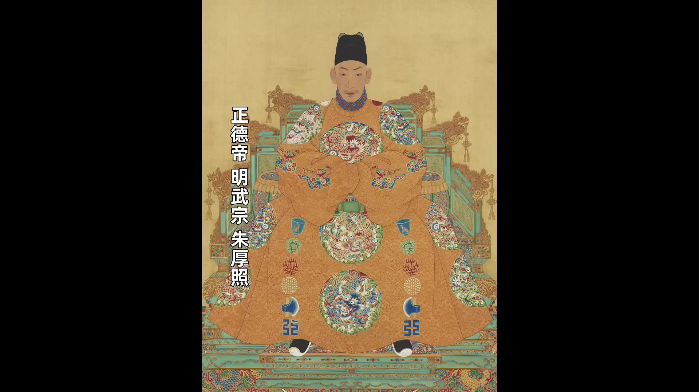
朱厚照是明朝最奇葩的皇帝之一，他放著皇宮不住，非要住進豹房。對，你沒聽錯，豹房就是養動物的地方。他把豹房擴建，住進豹房，還打造出來一套「豹房政治」。
他放著皇帝不當，非要當大將軍。他自己把自己封做大將軍，讓所有官員都以大將軍的名號稱呼他。他甚至給自己取了一個化名，他本名叫朱厚照，他給自己取了個化名叫朱壽。然後他以皇帝的名義給自己這個朱壽下發聖旨，讓大將軍朱壽統帥六軍。朝臣們都知道朱壽就是皇帝本人，但是還是得陪著他一起演戲。朱厚照的一生充滿了矛盾，在文官大臣眼裡面，他肯定是一個荒唐透頂的昏君。但是後世也有人說，他是活出了自我，打破了封印。朱厚照為什麼會有那麼多叛逆的行為？他到底在追求什麼？今天我們就來聊聊這位正德皇帝朱厚照。
弘治十八年五月初六，乾清宮冬暖閣一大早，司禮監太監戴義奉旨宣召內閣重臣劉健、謝遷、李東陽覲見皇帝。弘治皇帝身患重病，他自己感覺到不好，把三個重臣叫來是為了托孤。
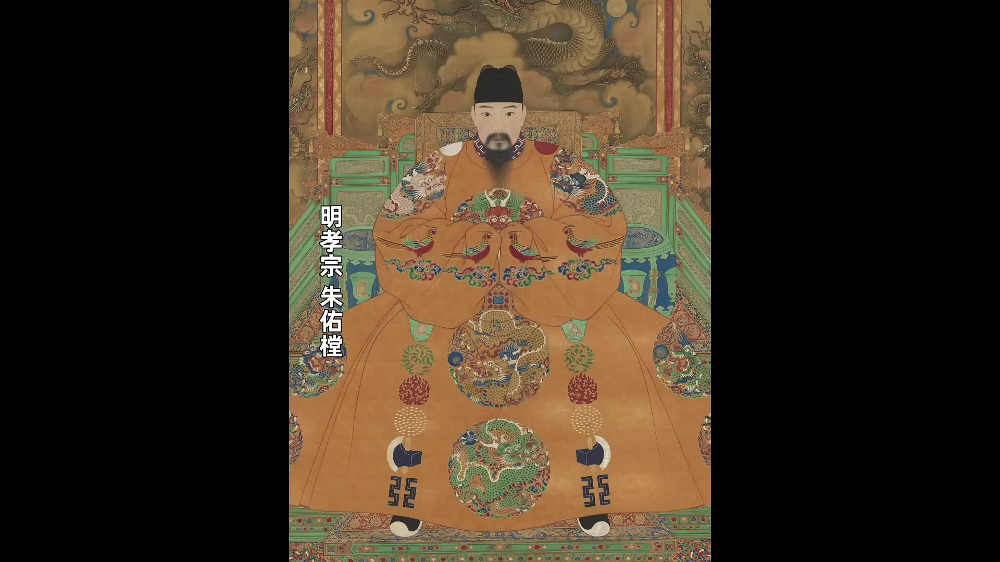
弘治對三位大臣說：「但年少好逸樂，先生們勤請他出來讀些書，輔導他做個好人。」在生命的最後時刻，弘治把他對太子的擔憂全都說了出來。他這句話呀，至少說出了他的三個擔憂：第一，太子貪玩好樂；第二，太子討厭讀書；第三，太子恐怕不是一個做好人的坯子。所以他請求三位大臣幫幫太子，輔導他做個好人。可以說知子莫若父，後面發生的事情會證明弘治對他兒子的這些擔憂全部都成為了現實。兩天之後，弘治駕崩，太子朱厚照即位，年號正德。
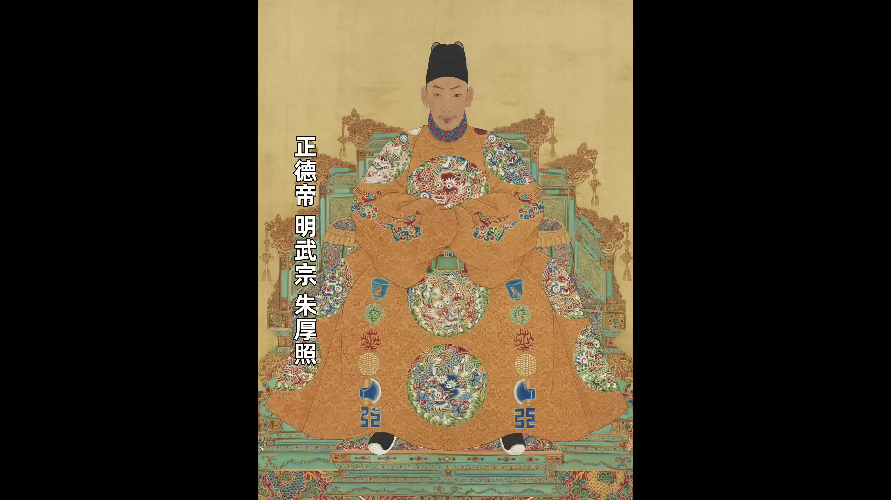
正德皇帝登基的時候年僅15歲，是位少年天子。15歲這個年齡說大不大，有強烈的主觀願望，同時自我控制力又很差。這時候如果有父親在還可以對他進行管教和引導，但是偏偏朱厚照在這個年紀失去了父親，他又登上了皇帝的寶座。按照明朝宮廷制度，皇帝15歲就視為成年，成年的標誌是大婚。正德元年八月，剛登基不久的朱厚照迎娶了自己的皇后夏氏，然後又納了兩個妃子沈氏和吳氏，這樣正德就已經完成了成年的所有儀式。他完全可以當家作主了，無論是作為一家之主、作為家裡的男人，還是作為一國之君、作為皇帝，他做主之後做的第一件事是幹了什麼呢？他首先把尚寢官員停職。尚寢官員是幹什麼的？尚寢官是皇宮裡面負責管理皇帝在哪睡覺的官員。按理來說呀，後宮的皇后、妃子皇帝都可以隨意的享用，但事實上卻不是這樣。皇帝在寵幸妃子之前必須要事先通知尚寢官，由尚寢官來做準備，即使皇帝臨時寵幸了誰，事後也需要跟尚寢官備案。這麼做的目的是尚寢官要記錄皇帝在哪年哪月哪時間寵幸了哪個妃子，因為這關係到皇家血脈的問題，絲毫含糊不得。但這對皇帝來說就非常不爽，皇帝不僅私生活毫無秘密可言，而且還有可能被干預，因為這會給太后、皇后之類的別有用心的人留下餘地，一旦讓她們得知皇帝要召哪個妃子侍寢，她們很有可能過來橫加干預。
朱厚照登基之後對這點非常不爽，他想遊遍後宮，想跟哪個女人睡就跟哪個女人睡，所以他直接停止了尚寢官的職能。他這麼做雖然違反袓制，但是也沒人能管得了他。朱厚照當家作主之後的第一件事居然是實現了自己的性解放。但是這些大臣們很快就會發現，這位剛登基的少年天子未來會做出更多更大膽的舉動。朱厚照登基之初他都在幹什麼？他每天領著一幫跟他年齡差不多的小太監在宮廷裡面角觝蹋麴。角觝類似於今天的摔跤，蹋麴就是蹴鞠，也就是踢足球。我們想象一個畫面，作為一國之君，朱厚照丟下國家大事不聞不問，每天領著一幫小太監在一起玩摔跤、踢足球，玩得大汗淋灕，不亦樂乎。這還不算什麼，我們從大臣們進諫的奏疏裡面能看到正德皇帝喜好「彈射釣獵」「殺生害物」，他把「鷹犬狐兔」等形形色色的動物圈養在宮裡面，紫禁城幾乎變成了一座動物園。正德皇帝還把太監們組織成軍隊，讓太監們穿上鎧用戴上頭盔在皇宮裡面真刀真槍的玩騎馬打仗。歷來威嚴肅穆的紫禁城在正德皇帝登基之後被糟蹋的不成樣子。
00:05:00
不過這跟後面的事情相比也還不算什麼
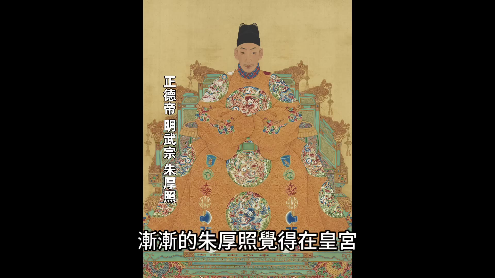
漸漸的朱厚照覺得在皇宮裡面折騰已經不過癮了，他開始踏出皇宮微服遊蕩。走出皇宮之後，朱厚照好像看到了新天地，他玩的更是不亦樂乎。要說玩，朱厚照可以說是一個頂級玩家。除了那些普通貴族玩的什麼騎馬打獵、煙花柳巷之類的，朱厚照又玩出了新高度。他曾經讓人把一條商業街都封鎖起來，讓太監從宮裡面搬出來成堆的衣物，他自己扮成一個買賣衣物的小販，讓太監扮成店家，他自己跟店家討價還價。他還要求太監一定要假戲真做，討價還價絲毫不能客氣。過完討價還價的癮之後，他又跑到一個由太監掌管的皇家酒鋪，在酒鋪裡面喝酒玩女人。朱厚照甚至他把宮裡面的宮女給弄出來，讓這些宮女在酒鋪裡面扮演陪酒女，然後他喝醉了就住在酒鋪。根據統計，朱厚照自從出宮遊玩之後，每個月回宮住的天數一般不會超過四五天，其他時候都是在宮外留宿。如果他是一個普通的十五六歲的孩子，這也沒什麼，關鍵是他不是普通孩子，他是皇帝，他是身系天下的九五之尊。我們說帝制的荒誕就荒誕在這，只要是皇帝的兒子，無論他是什麼品性，無論他適不適合做皇帝，他都有可能坐到皇位上，有些時候甚至必須坐在皇位上。朱厚照很顯然不是那個適合當皇帝的人，但是沒辦法，他是弘治皇帝的嫡長子，必須當皇帝。當皇帝就需要恪守為君之道，否則就是國家的災難。
古代皇帝擁有至高無上的權力，但是這個權力並非毫無約束，因為皇帝的權力如果毫無約束，君主就會自我膨脹為所欲為，這個朝代很短時間就會結束。所以古代帝制的設計雖然沒有法律制度去制約皇帝，這個精神枷鎖就是儒家倫理。中國從漢代開始獨尊儒術，也就是正式承認儒家倫理是君主專制的政治基礎。儒家倫理簡單點說就是「君君臣臣父父子子」，做君主的要恪守君主的本分和義務，做臣子的要恪守臣子的本分和義務，做父親的要恪守父親的本分和義務，做兒子的要恪守兒子的本分和義務，大家都守住自己的本分，盡到自己的義務，社會才會井然有序，國家才能長治久安。否則的話，君不君則臣不臣，父不父則子不子，這樣天下就大亂了。這套儒家倫理經過上千年的實踐，是被歷朝歷代的君主認為行之有效的政治制度，但是這套政治制度畢竟只是一種「共識」，而不是一套法律。遇到責任感強的君主，肯去學習儒家倫理的君主，他們就會願意接受這套倫理的約束。但是遇到秉性不好的君主，他們完全可以拒絕學習，也不接受約束，畢竟不受約束的權力的誘惑沒有幾個人可以抵擋。所以歷朝歷代的君主都算上，胡作非為的君主、禍國殃民的君主比英明有為的君主要多得多。但是碰到不受約束的君主，這套政治制度也不是完全沒有辦法，它還有一個糾錯機制就是士大夫階層。士大夫階層非常重要，他們在君和民中間起到非常關鍵的作用。
士大夫來自民間，輔佐皇帝治理天下大事，退休之後他們又回到民間成為鄉紳，變成地方百姓的領袖。範仲淹說的很好，「居廟堂之高則憂其民，處江湖之遠則憂其君」，這句話再好不過的詮釋了士大夫的特點，他們既憂君又憂民，既對君主負責。我們經常聽到一句話呀，叫「君要臣死，臣不得不死」，這是士大夫的忠君思想。這句話聽起來士大夫可能有點迂腐，如果是明君可以說「君要臣死，臣不得不死」這個很有道理，但要是昏君呢？為什麼也要「君要臣死，臣不得不死」？但事實上這句話不能這麼理解，士大夫忠的君並不是某個皇帝本人，他們忠的君是合乎他們理念的君，是有道之君。什麼是有道之君？說直接點就是按照儒家思想的標準，能守住自己本分的君主。君主的本分是什麼？孔子說過。
在孔子心目中，君是以民存的關鍵是看君對民的態度，君主對百姓好，能以百姓的利益為自己的利益，這就是儒家思想的道。孟子說的更直接，孟子說「民為貴，社稷次之，君為輕」，這種「民貴君輕」的說法歷朝歷代的皇帝不一定喜歡「為君之道」，但這確實是儒家思想裡面的。所以在儒家士大夫眼中，他們輔佐的君主必須要守住這個道。
00:10:00
當皇帝的行事不符合這個道的時候，士大夫的任務就是敢於發出「諫言」去糾正皇帝，這是他們的使命，所謂「文死諫」就這麼回事。當皇帝犯錯誤的時候，當皇帝行事不符合道的時候，拼死勸諫的結果很有可能會真的惹怒皇帝被皇帝處死，但是這樣他們死的心甘情願，因為他們不是為了忠於昏君而死，而是為了守住自己心目中理想的道而死，這才死而無憾。明代的士大夫呀就有這樣的品格，他們拼死勸諫抗爭得極其慘烈，因為不屈而死於廷杖之下的文臣綿綿不絕。不過也有不作為的士大夫，我們講成化帝的時候說，在成化後期以萬安為首的內閣是紙糊三閣老，為什麼說他們是紙糊三閣老？他們不敢帶頭勸諫，當時成化帝做了一件明顯不符合規矩的事，就是「傳奉官」。『傳奉官』是不經過吏部正規的選拔程序，由皇帝直接指派官員，成化帝在位的時候他親自指派了好幾千個傳奉官，極大的破壞了朝廷的秩序。當這種情況出現的時候，本來應該由萬安為首的內閣大臣領頭，其他一眾文臣集體勸諫，但是萬安、劉珝、劉吉這三個內閣大臣都不出頭，他們就被批評失去了士大夫的精神，被詬病為紙糊三閣老。所以成化後期朝廷的整體的士大夫的風氣都有所下降，這個情況在成化帝去世弘治登基之後有所扭轉。弘治帝朱佑樘信任文官，所以出現了一批賢能的文官輔佐他，弘治帝臨終托孤的三位大臣劉健、謝遷、李東陽都是標準的敢於進諫的士大夫。搞明自了士大夫階層的這種性質，就能明白為什麼明朝的皇帝和文官大臣之間總是衝突不斷，因為對於皇帝來說，士大夫是一種約束他的勢力，處處為難他制約他不讓他隨心所欲。我們也能看明白為什麼明朝的宦官會有那麼大權力，因為皇帝需要依靠宦官去對抗士大夫，皇帝一個人他沒法單獨對抗那麼多不怕死的士大夫，他需要宦官幫助他一起對抗。
搞清楚這些，我們再回過頭來看正德皇帝，正德皇帝朱厚照他登基之後的這些表現很明顯不是一個有道明君。
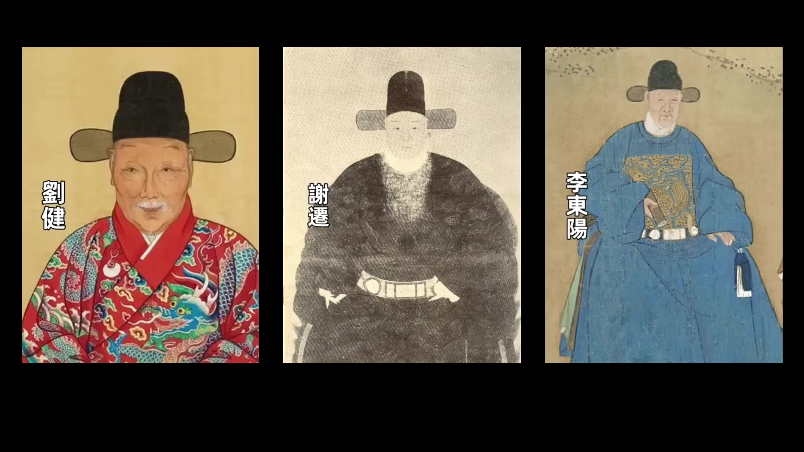
劉健、謝遷、李東陽這三位接受了先帝托孤的內閣大臣開始履行他們應盡的職責，他們做的第一項是引導朱厚照學習。先帝臨終前不是也說了嘛，讓位大臣勤請他出來讀些書以便他能做個好人。根據明朝的祖制，明朝的天子終生都要學習，學習的內容是儒家經典，學習的形式是日講和經筵。日講就是日常功課，幾乎每天都要學習；經筵是專題性的比較深入的大型講座，在春秋兩個季節舉行，每個月大概舉行3次左右。所以皇帝的學習就是每天一小講，每十天一大講，大概就是這麼個模式。大臣們請正德皇帝讀書就是請皇帝參與日講和經筵。朱厚照對讀書是完全沒興趣的，我們前面說了他即位之後每天做的事情是搞演習踢球，所以他跟大臣們鬥智鬥勇，為了躲避讀書為了逃課絞盡腦汁。我們簡單說一下他跟大臣們博弈的過程。
弘治十八年十月，劉健在奏章中說：
自從先帝去世以來進講一直沒有恢復，原來考慮到是先帝喪事繁重，現在喪事已經全部料理完畢，天氣即將轉寒，再拖下去進講就要等到明年才能恢復，所以他請求無論如何十一月初三都要重新開講。朱厚照勉強同意，但是開講之後維持了也就一個月，到十二月十四日他就以天氣寒冷為理由把講課給停掉了。這麼一拖就拖到了第二年，第三年正德元年二月舉行了朱厚照當皇帝之後的第一次經筵。這次經筵之後朱厚照又開始找理由不上課，我們看劉健當時上的一個奏章，從奏章裡面能看出來朱厚照找的都是些什麼理由，理由有去給太后問安還有要出去騎馬。
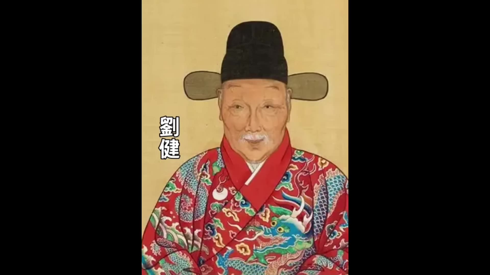
劉健在奏章裡面反駁皇帝的藉口，他說問安和騎馬完全可以跟學業並行，怎麼能成為不學習的理由呢？他在奏章裡面說的口氣有點重，還借著先帝的名義嚴厲地批評朱厚照說你這麼三天打魚兩天曬網的學習實在是對不起你父親。但是朱厚照依然我行我素不為所動，到5月份三天打魚兩天曬網的學習他都不學了，他借著天氣炎熱又把課給停了，說等到8月份再開課。等到了8月份呢又趕上他大婚，大婚之後實在是沒什麼理由了，到9月3日才重新開講，但是也就講了一個多月。
00:15:00
到10月份朱厚照又傳旨停講這場勸學與反勸學的拉鋸戰，大臣們跟朱厚照反復拉扯了整整兩年時間。這個過程中，朱厚照把他對讀書對聖賢之道的反感表達的是淋灕盡致。為了躲避讀書、為了躲避聖賢之道，他說謊搪塞、耍賴、裝聾作啞、出爾反爾，使出渾身解數跟大臣們周旋，最後終於以他獲得勝利而告終。
劉健、謝遷、李東陽這三位大臣雖然有弘治帝的遺命在身，名義上他們又是朱厚照的老師，但是完全沒用。對於一個不想聽話的皇帝來說毫無意義。這場勸學與反勸學的鬥爭的實質並不僅僅是皇帝讀不讀書的問題，而是皇帝拒絕接受儒家倫理的束縛，拒絕接受大臣們認為的正確的為君之道，他甚至拒絕被皇位所束縛，這將成為朱厚照一生的主旋律。
正德元年九月初二，朱厚照下旨委派大監崔杲前往南方督造龍衣，崔杲趁機向皇帝討要一萬兩千銀，引說是作為這次公幹的經費。正德皇帝批准。在古代鹽是國家壟斷經營，賣鹽都需要鹽引，鹽引是朝廷發放，裡面含有巨大的利潤空間。很多有權勢的人拿到鹽引之後還會在官鹽的掩護之下夾帶私鹽，這是更大的利潤。按照明朝的祖制，鹽政收入一律用於邊防開支，不得挪作他用，但是從成化朝開始這個祖制就被打破了。成化朝太監出宮辦事向皇帝索要經費，他們向皇帝索要鹽引替代經費。成化帝知道這中間利潤很大，但是他心疼家奴還是批准了太監們的請求，用鹽引給太監當經費。此例一開，太監們賺的盆滿鉢滿，一直到弘治初年這個政策還在實行，後來文官大臣們向弘治皇帝奏明害處，弘治皇帝才下令禁止太監討要鹽引才被迫中止。
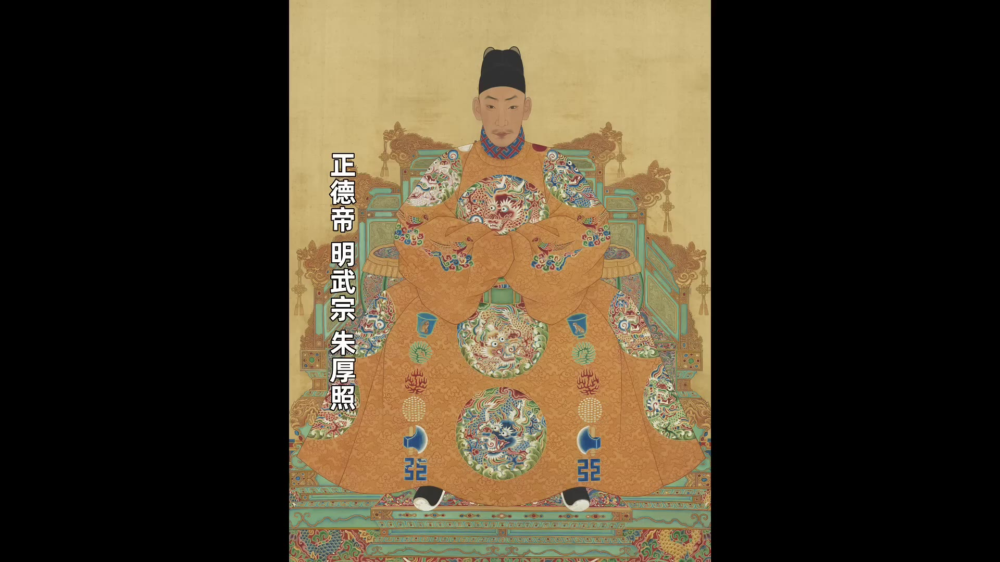
正德皇帝登基的時候發佈的登基詔書裡面再次強調了這個禁令，但是這個登基詔書是文官大臣代皇帝草擬的，皇帝當時還什麼都不懂，詔書裡面表達的都是文官的意見。現在正德皇帝登基一年了，對登基時候大臣們代他發的詔書他開始不認賬了。他批准崔杲討要鹽引的請求，等於是向文官大臣發出挑戰的信號。鹽引的事務是歸戶部管，戶部尚書韓文率先上奏，他搬出祖制和正德皇帝登基詔書裡面的相關條款，請求皇帝收回成命。
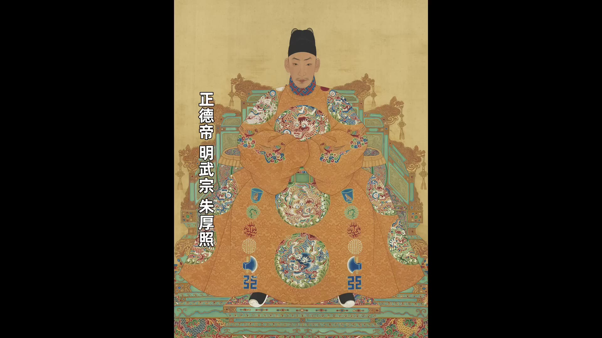
但是正德皇帝朱厚照心意已決，他堅決不改，駁回了韓文的奏疏。韓文的奏疏被駁回之後，文官集團一片嘩然，專門負責諫言的六科給事中十三道御史全都發動起來，他們接連上呈奏疏請求皇帝收回成命。
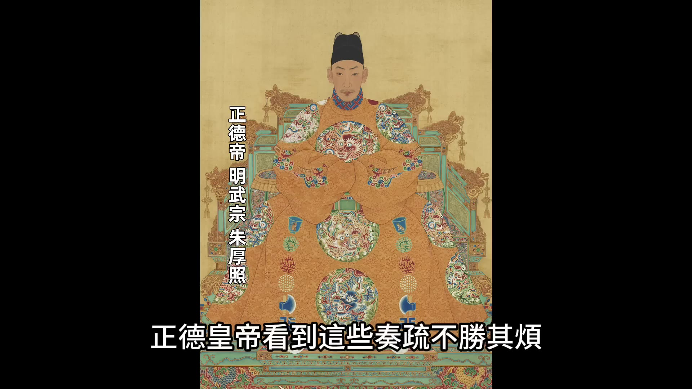
正德皇帝看到這些奏疏不勝其煩，他知道這場爭執涉及到他權威的確立，所以他咬住不松口，不管文臣們怎麼勸諫他就是不改。這麼僵持了好幾天之後，正德皇帝給這些勸諫的文官下了死命令說「君無戲言，我既然已經批准了給崔杲鹽引，你們不得再干預，誰要是敢再干預」。給事中們被皇帝給駁回來了。這時候文官集團只能打出最後一張牌了，就是劉健、謝遷、李東陽三位閣老。前面勸諫的那些給事中品級不夠高，皇帝可以隨意呵斥，但是三閣老德高望重，皇帝也要以禮相待。三閣老上奏明確表示：
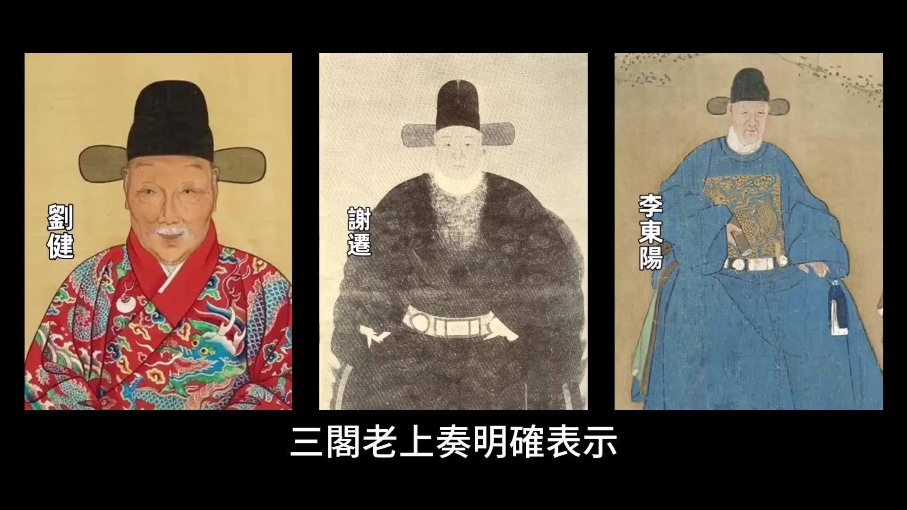
給崔杲鹽引的敕書內閣不打算擬旨。明朝的工作流程是內閣先擬旨，然後皇帝再批紅，如果遇到有疑議的事項，內閣也有權力拒絕擬旨請求皇帝重新考慮。三閣老這招一出，正德皇帝朱厚照有點不會應對了，雙方一時陷入了僵局。
朱厚照一看這毫不讓步恐怕是不行了，他就做出一個小小的變動。他發現在這些日子裡面朝臣們攻擊的最激烈的是太監崔杲，他就重新做了一次人事調整改派另外一個太監王瓚為首，讓崔杲當副手。朱厚照認為他退讓一步，朝臣們有了面子有了台階應該知足，沒想到文官集團完全針鋒相對，皇帝讓一步他們也只讓一步。文官集團商議過後由戶部上奏他們的妥協方案是同意把原來奏討的一萬兩千鹽引一半給予鹽引，另外一半折成價銀。這個方案有兩重含義，可以減少財政損失的數額，第二重意義是皇帝如果接受了這個方案就代表皇帝承認了大臣們的行為是合法的。朱厚照雖然年輕，但是他身邊的宦官們幫他理解到了這個方案的含義。朱厚照明白過來之後做出了強硬的回答說「不可以，必須全部都給鹽引」。9月15號這天正德皇帝朱厚照在文華殿召見三閣老。
00:20:01
雙方展開了最後的交鋒，李東陽在《燕對錄》裡面記錄了君臣之間的全部對話，其中朱厚照時而裝傻、時而耍橫，把他的個性表露無遺。例如說朱厚照先說：
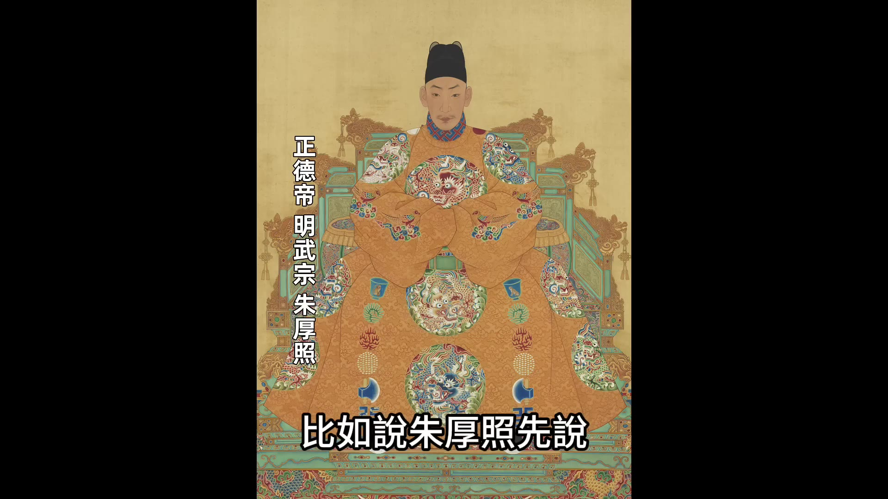
既然一半給價銀，為何不全部都給鹽引？劉健回答說，啟部的用意在於節約用度。朱厚照說，既然是要節約用度，為什麼不把實實在在的自銀留著，全部都給鹽引，這樣豈不兩邊都方便？他這麼說呀，就屬於是仗著自己年紀小在裝傻了。他肯定知道鹽引比現銀值錢，因為要真是現銀好，他又何必固執地堅持全要鹽引？
劉健只能耐心地解釋說，價銀是有限的，鹽引有可能被利用夾帶私鹽，謀取更多的利益。朱厚照說，如果真有此事，朝廷自有法制處置。劉健等心裡面都明白，這法制對於太監來說不管用，因為有皇帝的庇護，這些表面上的法制根本管不了太監。他們知道真實的原因又不能跟皇帝明說，只能從太監的品質上面做文章。這就是正德皇帝朱厚照跟三閣老的一部分對話。
最後正德皇帝留下一句話說，皇帝毫不退讓。劉健等大臣深感絕望。他們三個作為正統的儒家官僚，在這種局面之下只能表達自己的職責和操守，就是引咎辭職。第二天三閣老同時遞交了辭職的奏疏，這是出乎正德皇帝預料的。他沒想到內閣居然會集體辭職，他畢竟年輕，在政治上沒什麼經驗。如果三閣老都不幹了，這麼多朝政怎麼處理？他完全無從下手。最後他只能妥協，被迫宣佈接受戶部的方案，一半給鹽引。這場由鹽引引發的鬥爭，但是可以想象正德皇帝朱厚照心裡面得憋著多大的火，他很有可能都把這件事情當成自己的奇恥大辱。接下來的大政變就是由這次的導火索引發的。
鹽引鬥爭結束之後，文官集團想趁熱打鐵，抓住有利時機重創皇帝身邊的奸佞。他們把矛頭指向皇帝身邊的幾個核心太監，當時叫「八虎」。八虎是指圍繞在正德皇帝身邊的八個高級宦官，分別是劉瑾、馬永成、谷大用、魏彬、張永、丘聚、高鳳和羅祥，首領是劉瑾。這八個太監是從朱厚照在東宮當太子的時候就跟在他身邊的。朱厚照當上皇帝之後，八虎的地位水漲船高。朱厚照平時那些縱情玩樂的主意都是他們給出的。文官集團認為皇帝墮落根源就出在他們八個身上，所以應該借著鹽引勝利的東風，把八虎問題一並解決掉。
文官集團以三閣老為首，一眾大臣紛紛上奏請皇帝懲治八虎。時間，朱厚照很難招架。為了緩解一下壓力，他派出了朝臣並不太反感的司禮監陳寬、王岳等人去內閣說情討價還價。但是文官集團不打算讓步，他們又醞釀了一次大的集體上疏行動。這次行動由韓文領銜、李夢陽執筆，眾官員共同討論修改，最後廣泛徵集簽名上奏皇帝。
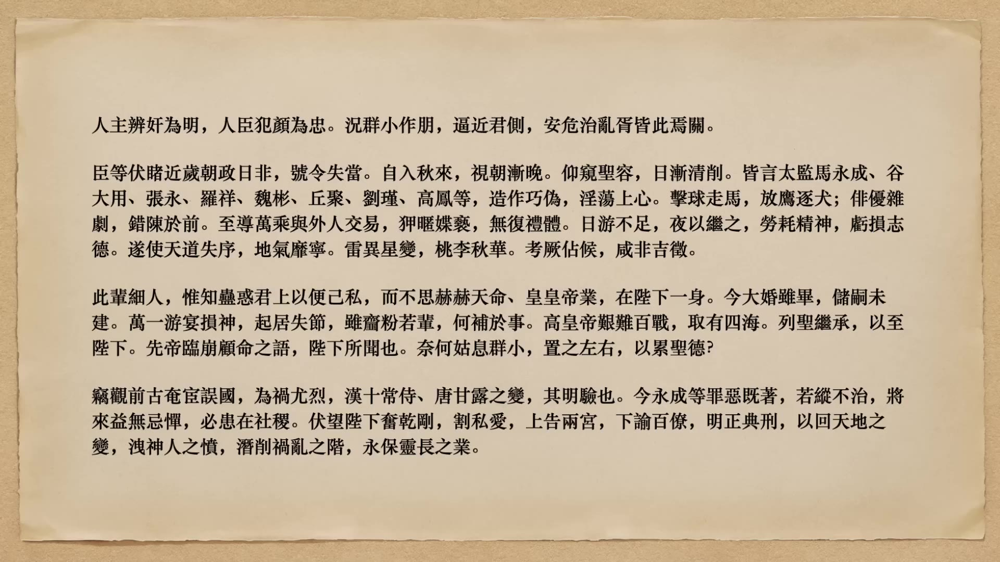
我把奏疏原文貼在這裡，大家感興趣的可以自己看看。這篇文章氣勢很盛，開篇以君臣大義立足，隨後點出了八虎的姓名，說出他們胡作非為，然後轉入對皇帝的勸諫，說無論從什麼角度出發，姑息這些奸臣都是有違道德的。最後又站在歷史的高度上說明宦官誤國的危害。整篇奏疏擺出一副「清君側」的架勢，又是引用歷史典故，又是擺出祖宗遺訓。朱厚照看得是心驚肉跳。更嚴重的是奏疏後面那一長串名字，滿朝官員採取聯合行動，他們一起伏在宮外請願，勢必要把八虎按律法處置。
朱厚照再次派出王岳等太監去談判，這次他開出了妥協的條件，把他們發往南京「閒住」。當時「閒住」是明朝宮廷對獲罪的太監的一種處置方式，相當於是流放。對於皇帝的退步，文官大臣們還是不同意，他們堅持要把八虎明正典刑，否則絕不罷休。王岳看到這種情況呀，他就跟內閣大臣說說，他願意幫助大臣們回去密奏皇帝。第二天早晨逮捕八虎。王岳是司禮監太監，史書上對他的記載是「素忠直」三個字。
00:25:02
就是說他一向忠誠正直他願意幫助文官集團是因為正宜但是這個原因可不可信不太好說王岳他是司禮監太監他跟八虎不是同黨他們在權力爭奪上也有宿怨現在滿朝大臣齊心協力要除掉八虎也正中他懷他順勢幫助文臣一把也正好替自己除去兢爭對手王岳他們加入到文臣的陣營之後劉健等人信心倍增按照計劃第二天早晨把八虎拿下他們即將獲得最後的勝利沒想到這時候出現了一個小人
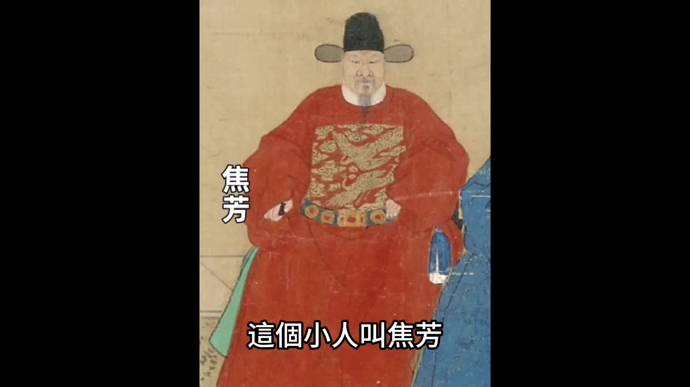
*這個小人叫焦芳他是當時的吏部尚書《明史》給焦芳的評語很差說他「粗鄙無學識，性陰狠」正德元年他是靠諂媚做了吏部尚書他在當官的過程中跟劉健、謝遷等人不和一向都有矛盾這次文官集團發起的倒八虎的運動他是迫於形勢才在奏疏上面一起簽字他眼看倒八虎的運動要是成功了謝遷等人的勢力必將更加穩固劉健、他就開始動歪腦筋焦芳在得知王岳等人加入文官集團一伙之後第一時間他就把這個消息秘密報送給了八虎劉瑾等八虎得到消息之後立刻就去找正德皇帝朱厚照他們在朱厚照面前痛哭流涕一邊哭一邊把王岳等人是如何勾結外臣的事情添油加醋的說出來王岳支持朝臣的舉動在皇帝看來是犯了大忌皇帝信任太監是因為皇帝視太監為自己人是自己的家奴現在家奴勾結外臣皇帝絕對不能接受在劉瑾等人的勸說下朱厚照立刻頒旨抓捕王岳等人然後下令由劉瑾取代王岳執掌司禮監八虎的其他成員丘聚提督東廠谷大用提督西廠張永等人管理京營一夜之間內廷中樞以及京城主要的特務機關和禁衛軍都落到了八虎手中而在皇宮外面無所知謝遷等文臣還劉健他們以為自己已經穩操勝券正德元年十月十三日清晨正德皇帝頒布聖旨赦免了劉瑾等八人還對他們職務做出新的任命聖旨還強調這是皇帝的最終決斷恭候在左順門外的百官聽到聖旨之後都是目瞪口呆驚訝的說不出話來現場一片寂靜剎那間從劉健到百官-個個像洩了氣的皮球稀稀落落的各自離去劉健、謝遷知道事不可為他們當天向皇帝請辭這次內閣請辭正德皇帝朱厚照像換了個人跟上次害怕的情形完全不一樣他當即就批准了請求按照慣例來說內閣大臣這樣級別的人物請辭皇帝就算心中十分樂意他也不能立即應允至少要來回折騰個三四次以示輓留但是朱厚照完全沒輓留直接批准內閣三大臣劉健和謝遷都辭職回鄉只有李東陽沒被批准李東陽忍辱留下保存了一點正義的力量文官集團失敗之後以劉瑾為首的宦官集團得勢正德二年三月在劉瑾的操作下朝廷發佈了「奸黨榜」就相當於是後來的「反黨集團」『好黨榜」上一共有56個人劉健居首然後是謝遷下面是尚書4個人宦官3個人然後是科道官41人其他部員6人這些人有的被處死有的被免職這次政變是一次關鍵性的轉折點《明史》在敘述這段內容的時候好幾次用了「大變」這個詞它至少帶來三個嚴重後果第一好不容易在弘治年間恢復起來的文官政府又回到形同虛設的狀態第二宦官勢力崛起這為以後貫穿整個正德時期的「豹房政治」奠定基礎第三正德皇帝朱厚照徹底掙脫了道德的束縛從此以後沒有任何力量可以對他進行約束他可以肆無忌憚的釋放自己的天性好了今天的內容就講到這裡
下期節目我們繼續講朱厚照釋放天性之後的故事我開通了「1921-1945年的專題歷史課程』有興趣的朋友歡迎點擊影片下方鏈接瞭解歡迎大家點贊關注
大家好今天我們繼續講明武宗朱厚照
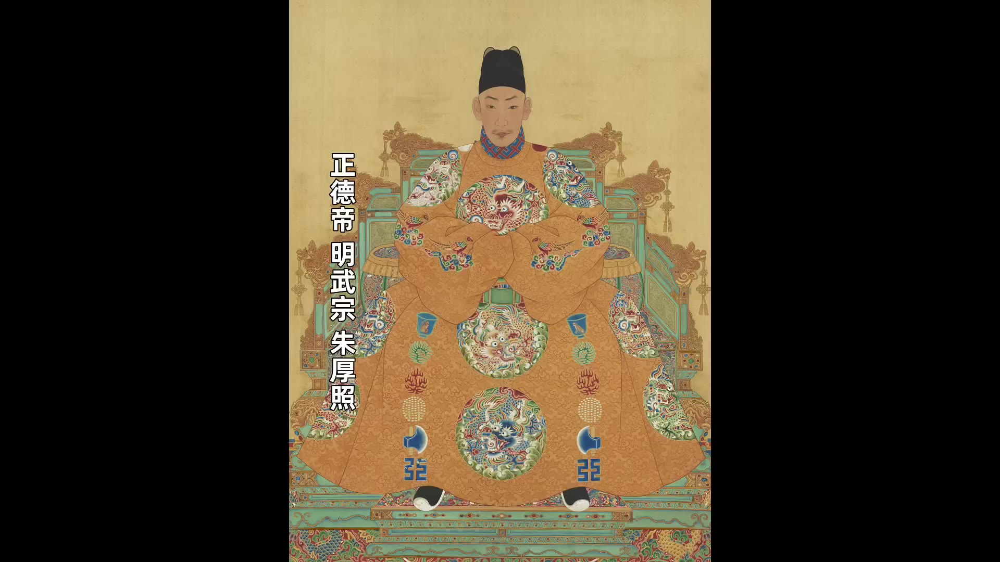
上期節目我們講到朱厚照他15歲登基登基之後縱情玩樂不愛學習面對他父親留給他輔助他要做個好皇帝的那些內閣大臣他討厭至極他只用了一年時間就通過一次大政變把這些令他討厭的文官大臣全部都扳倒然後他徹底釋放天性放飛自我放飛自我之後朱厚照做了什麼事呢他做了一件歷史上所有皇帝都沒做過的事他居然搬出了皇宮住進了豹房
我們先看看豹房在什麼位置
00:30:00
現今位於故宮西側的申海南海與中南海北面的北海三片水域在明代本為一體，以太液池為核心構成皇城內紫禁城西側的水域系統。當時西苑內建有豹房，位於北海西側。豹房原為宮廷豢養動物之處，除豹房外尚有虎房、馬房等設施。宮廷養殖動物有兩大原因：其一供皇室觀賞娛樂，其二因珍禽異獸被視為祥瑞象徵。明代藩屬國常以獅子、老虎、白象等珍稀動物作為貢品進貢，這些動物皆被養於宮中。宮廷亦設有專門馴獸師負責調教動物，使其具備表演性質。正德皇帝朱厚照尤喜與動物互動，史載其曾多次赤手與老虎、豹子搏鬥。正德九年一次搏鬥中，朱厚照遭老虎壓制，急喚錢寧救援，錢寧因懼而不敢前，最終由江彬解救。此事件直接影響錢寧與江彬在豹房的地位，二人皆為朱厚照寵臣，後文將詳細述及。
自正德二年起，朱厚照以原有豹房為中心進行大規模擴建，工程歷時五年至正德七年完工，共建房屋200餘間，包括宮殿、寺廟、道觀、船塢及軍事操練場等。工程規模龐大，堪稱紫禁城外另建之行宮。完工後朱厚照親自命名為「豹房公廨」，此名融合娛樂場所與官府衙門之意，恰如其分反映其性格特質。自正德二年起，朱厚照即從紫禁城遷居豹房，終生未再回紫禁城居住，直至病逝於豹房。
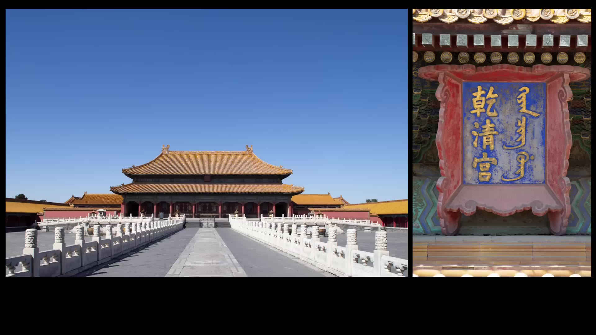
明代皇帝寢宮為乾清宮，此地不僅為休息之所，更象徵皇帝義務與責任。朱厚照性格嚮往自由，視乾清宮為充滿祖制約束的心靈囚籠。為擺脫束縛，他選擇物理性逃離紫禁城，遷居豹房。此舉不僅是精神上的解放，更代表其主動放棄皇帝角色所應承擔的義務，卻未放棄皇帝權力。豹房位於紫禁城外皇城內，使朱厚照仍可監控朝廷動態，維持權力中心地位。
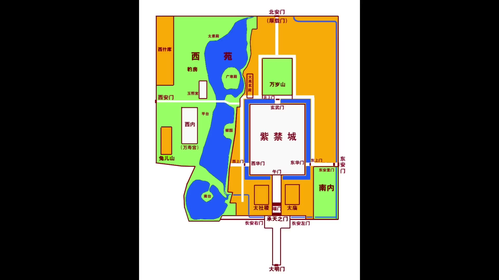
從地圖可見，豹房雖處紫禁城外，仍位於皇城範圍內。朱厚照遷居豹房，實質上是以放棄皇帝義務為代價，換取不受約束的自由，同時保持對朝政的掌控力。此舉展現其對權力與自由的獨特追求，亦反映明代皇權運作的複雜面向。
00:35:00
從這點來看，他是有點耍無賴。他並不是真的不想當皇帝了，他是一邊享受著皇帝這個角色帶來的至高無上的權力，又一邊不願意承擔皇帝應該負的責任和應該受的約束。這就是朱厚照雖然很無賴，但是這可能就是他真實的本性。
豹房的生活是什麼樣子的？我們可以想象一下，那應該是一處密室，密室裡面光線昏暗朦朧而且幽深。屋子不小，但是只開著一扇窗戶，從開著的窗戶裡面透出一束陽光，陽光照射在屋裡的地面上，照射出一個衣著華麗的滿臉倦容的少年。這個少年胡亂的躺在地上，他的頭枕在另外一個男人的懷裡，他們的身邊到處都是散落的凌亂的食物、酒罐和酒杯，有的酒罐已經傾倒了，有的酒杯已經摔碎了，有的食物和水果也都滾到了地上。密室的牆壁上是掛著各種各樣的春宮圖，甚至還有異域風情的人體彩繪。這些場景不是我們憑空想象的，每句話都能找到出處，有很多史料裡面描述的甚至很細節。在豹房出入的人員也很雜亂，有太監、有武將、有番僧、有阿拉伯舞女、有高麗美女、有江湖藝人等等。當時是明代，明代是理學統治的意識形態，理學可以說是自古以來最保守的意識形態，豹房的生活方式肯定是跟理學的意識形態完全相悖的。朱厚照每天在豹房裡面應該是頹廢的、追求感官刺激的、追求及時行樂的，過著醉生夢死的生活。朱厚照雖然搬到豹房居住，
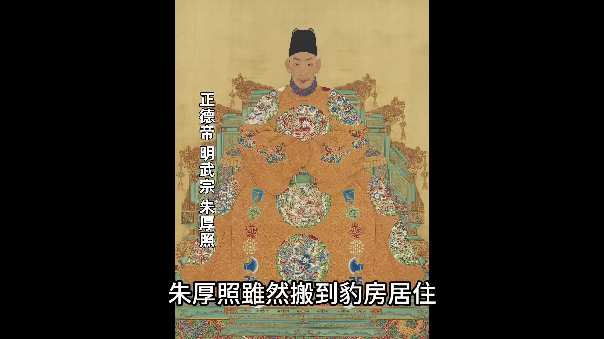
但是他並沒有放棄皇帝的權力，外廷的大臣擬好的奏章還是由他來批復，雖然實際上大部分奏章都是由同禮監太監劉瑾等人代他批復的。這樣明廷就出現了兩個政治中心，一個政治中心是在紫禁城還是按部就班的工作，另外一個政治中心就在豹房，朱厚照在豹房發號施令，通過司禮監太監到內閣宣佈聖旨。豹房作為一個新的政治中心，它內部也有自己的權力結構，在豹房裡面權力最大的是太監和邊軍將領。太監就是以劉瑾為首的八虎集團，在大政變之後，八虎集團掌握了內廷的各個權力機關。內廷最重要的幾個機關，一個是司禮監，司禮監有批紅權，這是竊取了皇帝的權力，劉瑾執掌司禮監，他獲得了最大的權力。另外一個是東廠、西廠，東廠、西廠是特務機關，八虎裡面的丘聚掌管東廠，谷大用掌管西廠，他們掌握的是審視朝臣的權力。還有一個是八虎裡面的張永，張永掌握的是京軍團營，這是掌握了很重要的一部分軍權。所以從批紅權到監察權到軍權都牢牢掌握在這些宦官的手裡面，宦官的權力非常大。後來劉瑾倒台之後，宦官的權力有所減弱，但是從整體來看，終正德一朝宦官專權的情況都很嚴重。除了太監之外，在豹房裡面另外一股政治力量是邊軍將領，邊軍就是邊防軍。
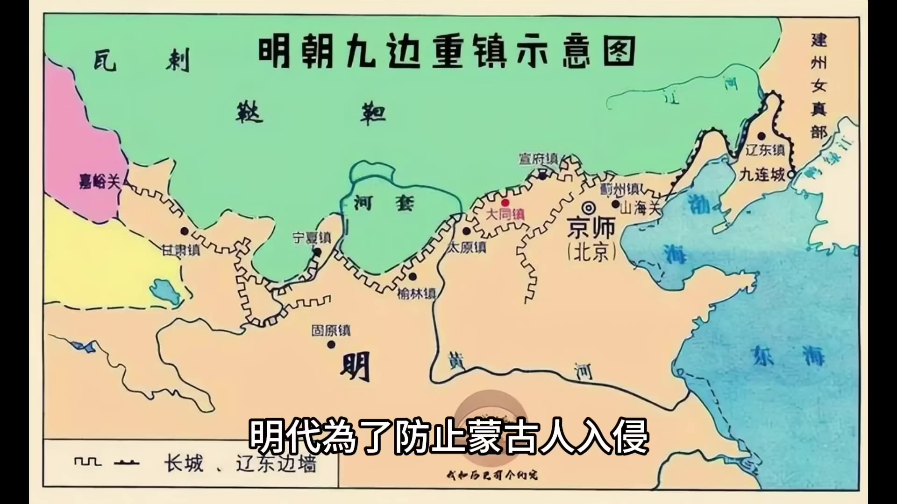
明代為了防止蒙古人入侵，設置了長城、遼東邊牆。這九邊重鎮的邊軍高於內地的衛所的軍隊的京營軍隊，邊軍和京營軍隊本來都是大明軍隊的主力，但是因為邊軍處在戰鬥的第一線，他們經常面臨蒙古部落的騷擾，所以他們的軍事訓練絲毫不能松懈，他們的實戰經驗也比京營的軍隊要豐富得多。這樣邊軍的實力強，京軍的實力弱，邊軍對京軍又形成了很大壓力，一旦要是發生邊軍作亂，京軍就很難應對。所以明朝呢就又有一個祖制，就是京軍不能調外，邊軍不能調內，這條祖制這麼多年一直都在遵守。但是到正德年間被打破了，正德四年到正德七年的時候，明朝發生了劉六、劉七流民造反事件。造反事件發生之後，朝廷先是派地方衛所的軍隊去鎮壓叛亂，地方軍隊戰敗了，然後又派京營軍隊去鎮壓，京營軍隊也敗了，叛軍的聲勢越來越大，居然一路要打到京城。這時候的情況很緊急，朝廷決定調宣府、延綏和遼東的邊軍來平亂，邊軍進入到內地之後成功平定了叛亂。在叛亂被平定之後，正德皇帝朱厚照下旨，
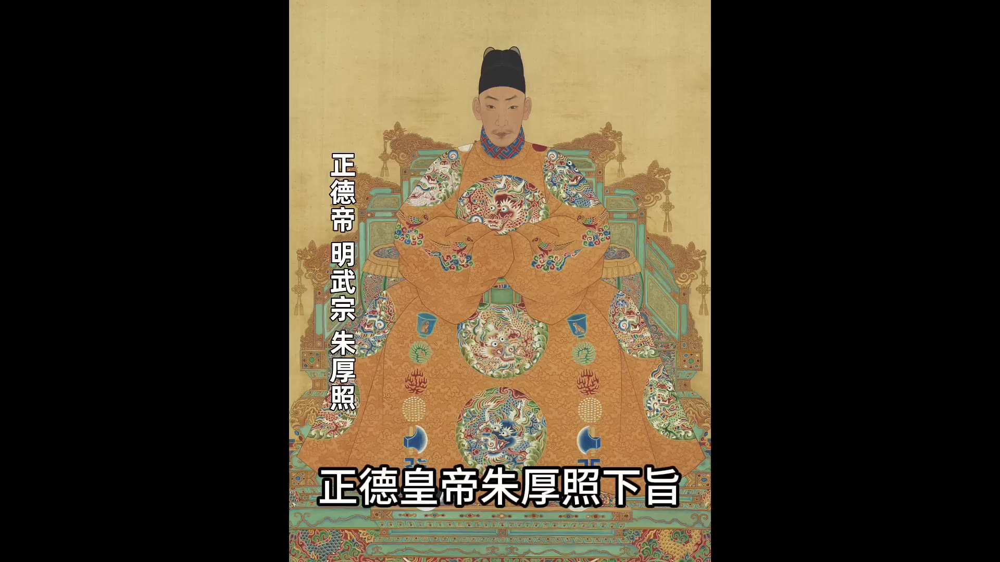
對調京營和宣府的官軍，兩軍交換操練和駐守。朱厚照發現在這次平亂的過程裡面，邊軍的武力更強，所以他有意的想讓邊軍留在自己身邊。一開始他是把宣府的一部分邊軍留在京城，後來他把宣府、延綏、大同這些留在京城的邊軍就成為了朱厚照自己能掌控的軍事力量。
00:40:02
朱厚照專門為邊軍將領設立「外四家」，由其最信任的將領江彬統領。由於朱厚照崇尚武力，邊軍將領在豹房中的地位極高。目前所說的豹房政治中，有三股勢力特別顯眼：其一是以劉瑾為首的宦官集團；其二是以江彬為首的邊軍將領；其三則是錢寧——成化朝太監錢能的養子。錢能在成化朝時即為權傾朝野的太監之一，錢寧自幼跟隨義父學習攀附權貴之術。正德初年劉瑾得勢後，錢寧主動巴結劉瑾，經其引薦入豹房，迅速獲得朱厚照寵信，成為豹房大管家。
錢寧不僅擅長逢迎，更因騎射技藝精湛而深受朱厚照青睞。其權勢甚至超越劉瑾，最終官至左都督，統領錦衣衛與詔獄。朱厚照甚至賜姓朱，改其名為朱寧。《明史》記載「帝在豹房常醉枕寧臥，百官候朝至晡莫得帝起居」，說明朱厚照常醉臥於錢寧懷中，此情節為百官所知，形成「密伺寧，寧來則知駕將出矣」的規律。
錢寧與朱厚照的關係超越一般君臣，史書雖未明言，但「帝在豹房常醉枕寧臥」的記載已暗示特殊親密。錢寧與其他男子的關係亦非尋常，如錦衣衛千戶王注因打死人遭刑部追查，錢寧竟以「注與寧暱」為由包庇，甚至動用東廠施壓，迫使刑部撤銷案件。此「暱」字所指，已超越一般友誼。
錢寧在豹房的權勢雖一度凌駕眾人，但後遭江彬取代。江彬入豹房時間較晚，卻經權力鬥爭取而代之，甚至可能取代錢寧與朱厚照的「特殊關係」。《明史》與《罪惟錄》皆記載「帝宿豹房」，明確指出朱厚照與江彬同寢。
此外，錦衣衛中亦有特殊人物如于永。作為色目人（元朝時中亞、東歐種族的統稱，其中伊斯蘭教徒稱「回回」），于永因擅長「秘術」提升性慾而受朱厚照召見。朱厚照不僅從其學習「寶貴知識」，更聽從其建議尋訪「回回女人」，于永遂引薦錦衣衛官員呂佐——另一名色目人，其府中養有西域美女。
00:45:00
朱厚照對異域文化有濃厚興趣，當他聽聞呂佐擁有擅長異域舞蹈的舞者後，立刻下詔要求進獻十二名回族舞女。呂佐雖不情願，仍被迫遵從。朱厚照對這些舞女十分滿意，更進一步發布詔令，要求京城貴族家中若有回族女子，均需進獻供其選拔。
此舉導致京城內的回族女子幾乎都被徵召至豹房，引起朝臣不滿。于永因女兒被誣陷為絕色美女而遭牽連，他雖知女兒並非絕色，仍被迫將女兒藏匿並以冒牌回族女子替代進獻。
馬昂因妹妹馬姬的美貌而受寵。史書記載馬姬「大寵」，其才藝包括擅長胡樂與韃語、精於騎射，被朱厚照視為珍寶。
值得注意的是，馬姬入豹房時已懷孕，且其丈夫畢春的身份並未瞞過朱厚照。儘管朝臣對此事極度不滿，認為孕婦可能影響皇嗣正統，朱厚照仍持續寵幸馬姬。馬姬家族因此獲封官職，甚至被賜予府邸，其兄長馬昂更被恢復官職並升任右都督。
正德十五年工部報告指出，浣衣房每年耗費柴炭達16萬斤，顯示豹房內寄養女子數量龐大。朱厚照自民間徵選的美女均被收容於浣衣局，隨時待命入豹房服侍。
豹房內除女性外，尚有男寵、番僧、猛獸等。朱厚照與番僧修習的佛教法門與傳統持戒佛教不同，他甚至為番僧修建寺院並封贈法王。
朱厚照對武力的熱衷延續至成年，其身邊多為武人，包括強壯的太監與得勢的錢寧。他最終在豹房中度過十餘年生命，直至逝世。
00:50:00
正德十二年，明武宗朱厚照在江彬的鼓動下，決定親征蒙古。江彬作為宣府邊將，早年便受命在豹房操練軍隊，其軍事才能使朱厚照對邊關戰事產生濃厚興趣。江彬除向皇帝展示宣府軍隊的戰鬥力外，更以「宣府美女眾多」為誘惑，最終說服朱厚照離開京城。此舉實質上是江彬與權宦錢寧權力鬥爭的結果——作為宣府將領的江彬，期盼藉皇帝巡邊提升自身地位。
朱厚照在宣府營建「鎮國府」，並改名為「朱壽」，自封「總督軍務威武大將軍」，後又加封「鎮國公」。此舉標誌著他徹底拋棄皇室約束，以「威武大將軍鎮國公朱壽」身份活動。儘管遠離紫禁城，他仍透過「鎮國公府」維繫皇權，顯示其對皇位的執念與逃避責任的矛盾。
正德十二年九月，明廷獲報蒙古在玉林衛周圍集結五萬騎兵，意圖進犯中原。
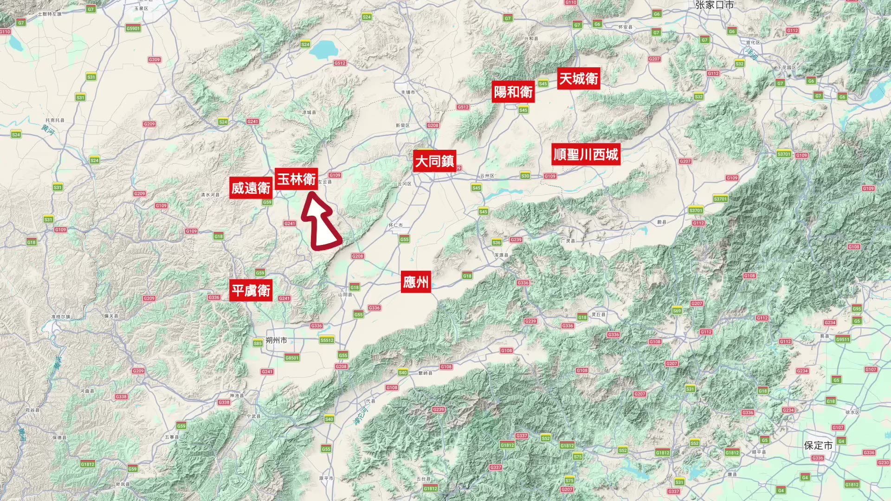
朝廷以大同鎮為中心，調動天成衛、陽和衛等軍隊部署防禦。朱厚照聞訊後立即率軍從宣府出發，沿順聖川西城、陽和衛一路西進。
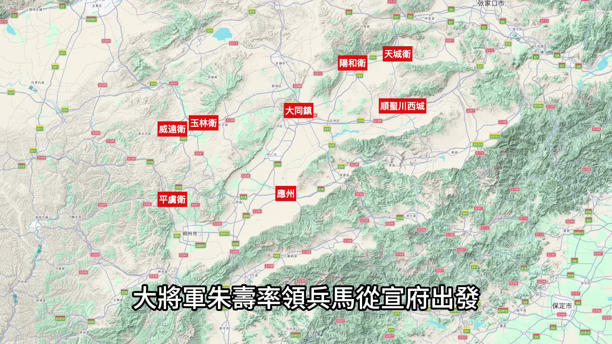
至十月中旬，朱厚照率軍抵達應州（今山西應縣），當地守軍與蒙古軍激戰三日，但蒙古軍均未正面交鋒。朱厚照親自督戰，與蒙古軍從晨戰至暮，然次日蒙古軍已悄然撤離。
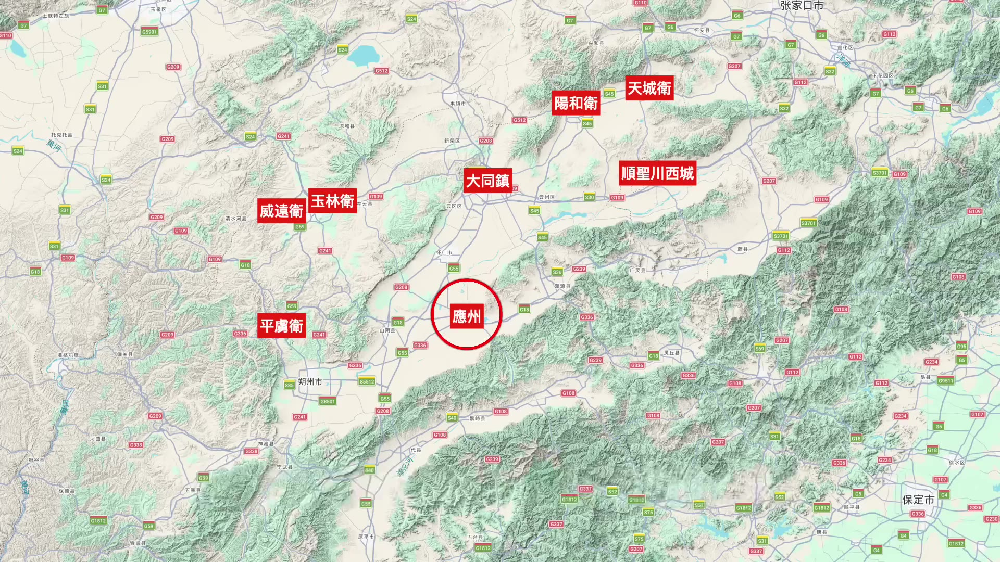
明軍將領勸阻朱厚照追擊，因部隊已連續行軍百公里且戰鬥一整天。朱厚照雖感掃興，仍堅持西進，最終在應州戰役中未能實現其建功立業的願望。
00:55:00
應州之戰爆發時，恰逢沙塵暴突襲，導致明軍無法開拔，朱厚照只得下令收兵。為掩飾戰敗事實，他命人向朝廷發送捷報，聲稱取得大勝。根據《明武宗實錄》記載，此役明軍調集宣府、大同兵力約六萬人，蒙古軍兵力不詳，惟上月探得玉林衛有五萬騎兵集結。即使全部投入戰場，明軍兵力仍佔優勢。戰鬥結果顯示，蒙古軍死亡十六人，明軍死亡五十二人，傷亡比例反見明軍損失更重。值得注意的是，《明武宗實錄》記載「乘輿幾陷」，意指皇帝本人險遭蒙古軍俘虜，如此戰果竟被朱厚照宣稱為大捷。
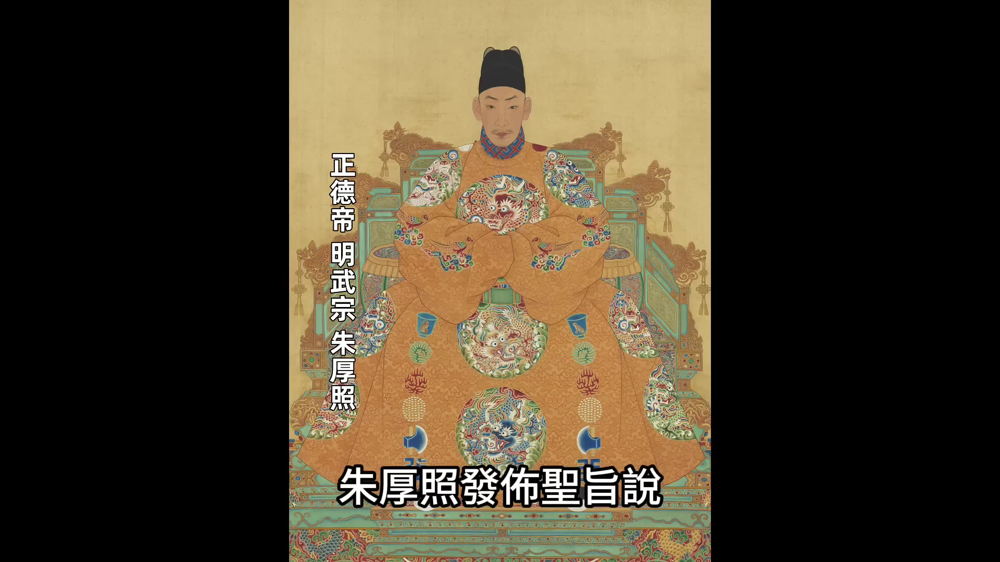
正德十三年七月初九，朱厚照率軍出發，從河北經山西、陝西至延綏鎮榆林衛，歷時七個月後返京。此役全程未與蒙古軍接戰，實質上是皇帝以巡視之名進行的遊覽活動。返京後朱厚照仍不滿足，擬訂南巡路線自北京經山東、徐州、揚州至南京，再沿長江至湖廣，此行程規模遠超此前西征。朝中大臣楊廷和、毛澄等百餘人集體勸諫，指稱南巡將耗費國庫、危及京師安危，最終遭朱厚照以廷杖懲處。恰逢寧王朱宸濠起兵造反，朱厚照以此為由展開南巡，卻未察覺王守仁已於四十三天內平定叛亂並生擒朱宸濠。
01:00:00
正德十四年（1519年），寧王朱宸濠起兵反叛，王守仁率軍平定叛亂後，需押解朱宸濠北上獻俘。朱厚照得知此事後，指派太監張永前往杭州截住王守仁，交付兩項任務：其一，將朱宸濠移交皇帝主持獻俘儀式；其二，要求王守仁修改捷報，將「威武大將軍朱壽」的功勞納入戰功記載。
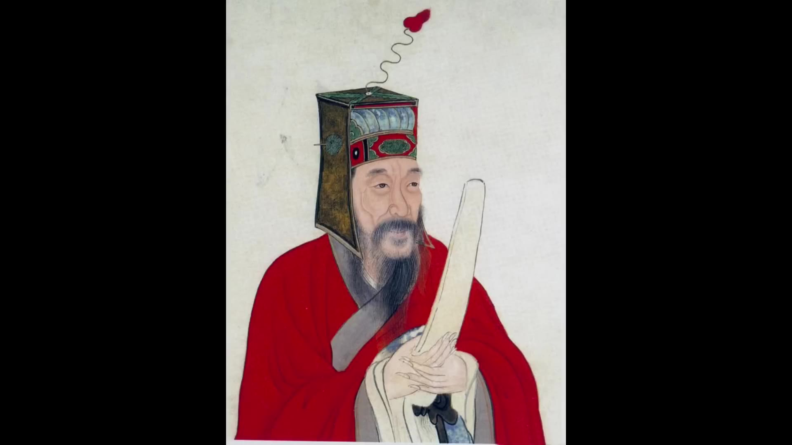
朱厚照將此戰勝利視為個人功績，於南方遊玩一段時日後，於次年十月攜帶朱宸濠返回北京。回京後，他舉辦隆重的獻俘儀式，儀式第三日即臥病不起。據記載，朱厚照生前曾獨自划船遊玩，不慎落水受驚，加之長期沉溺酒色，身體早已虛弱。回京後病情持續惡化，最終於兩月後駕崩於豹房，終年三十一歲。
朱厚照自登基後持續「解放」自身，從性解放、發動政變、遷居豹房，到自封「威武大將軍朱壽」，皆在突破皇位束縛。他雖放棄皇帝應有約束，卻未放棄皇權，反而利用權力縱情享樂。此種不受約束的權力導致其荒淫無度，掏空身體，終至早逝。更因無子嗣，導致後繼無人，為繼位問題埋下伏筆。
作為皇帝，朱厚照治國無方，但與歷史上其他暴君相比，其危害多屬局部性質。他雖建豹房、遊玩享樂，卻未進行大規模禍國殃民之事。其一生雖被後人詬病，但亦可見其對皇權的特殊理解與運用方式。
00:00:00
大家好今天我們講正德皇帝明武宗朱厚照
朱厚照是明朝最奇葩的皇帝之一他放著皇宮不住非要住進豹房對你沒聽錯豹房就是養動物的地方他把豹房擴建住進豹房還打造出來一套「豹房政治」
他放著皇帝不當非要當大將軍他自己把自己封做大將軍讓所有官員都以大將軍的名號稱呼他他甚至給自己取了一個化名他本名叫朱厚照他給自己取了個化名叫朱壽然後他以皇帝的名義給自己這個朱壽下發聖旨讓大將軍朱壽統帥六軍朝臣們都知道朱壽就是皇帝本人但是還是得陪著他一起演戲朱厚照的一生充滿了矛盾在文官大臣眼裡面他肯定是一個荒唐透頂的昏君但是後世也有人說他是活出了自我打破了封印朱厚照為什麼會有那麼多叛逆的行為他到底在追求什麼今天我們就來聊聊這位正德皇帝朱厚照
弘治十八年五月初六乾清宮冬暖閣一大早司禮監太監戴義奉旨宣召內閣重臣劉健、謝遷、李東陽覲見皇帝弘治皇帝身患重病他自己感覺到不好把三個重臣叫來是為了托孤
弘治對三位大臣說但年少好逸樂先生們勤請他出來讀些書輔導他做個好人在生命的最後時刻弘治把他對太子的擔憂全都說了出來他這句話呀至少說出了他的三個擔憂第一太子貪玩好樂第二太子討厭讀書第三太子恐怕不是一個做好人的坯子所以他請求三位大臣幫幫太子輔導他做個好人可以說知子莫若父後面發生的事情會證明弘治對他兒子的這些擔憂全部都成為了現實兩天之後弘治駕崩太子朱厚照即位年號正德
正德皇帝登基的時候年僅15歲是位少年天子15歲這個年齡說大不大有強烈的主觀願望同時自我控制力又很差這時候如果有父親在還可以對他進行管教和引導但是偏偏朱厚照在這個年紀失去了父親他又登上了皇帝的寶座按照明朝宮廷制度皇帝15歲就視為成年成年的標誌是大婚正德元年八月剛登基不久的朱厚照迎娶了自己的皇后夏氏然後又納了兩個妃子沈氏和吳氏這樣正德就已經完成了成年的所有儀式他完全可以當家作主了無論是作為一家之主作為家裡的男人還是作為一國之君作為皇帝他做主之後做的第一件事他是幹了什麼呢他首先把尚寢官員停職尚寢官員是幹什麼的尚寢官是皇宮裡面負責管理皇帝在哪睡覺的官員按理來說呀後宮的皇后、妃子皇帝都可以隨意的享用但事實上卻不是這樣皇帝在寵幸妃子之前必須要事先通知尚寢官由尚寢官來做準備即使皇帝臨時寵幸了誰事後也需要跟尚寢官備案這麼做的目的是尚寢官要記錄皇帝在哪年哪月代麼時間寵宰了哪個妃子因為這關係到皇家血脈的問題絲毫含糊不得但這對皇帝來說就非常不爽皇帝不僅私生活毫無秘密可言而且還有可能被干預因為這會給太后、皇后之類的別有用心的人留下餘地一旦讓她們得知皇帝要召哪個妃子侍寢她們很有可能過來橫加干預
朱厚照登基之後對這點非常不爽他想遊遍後宮想跟哪個女人睡就跟哪個女人睡所以他直接停止了尚寢官的職能他這麼做雖然違反袓制但是也沒人能管的了他朱厚照當家作主之後的第一件事居然是實現了自己的性解放但是這些大臣們很快就會發現這位剛登基的少年天子未來會做出更多更大膽的舉動朱厚照登基之初他都在幹什麼他每天領著一幫跟他年齡差不多的小太監在宮廷裡面角觝蹋麴角觝類似於今天的摔跤蹋麴就是蹴鞠也就是踢足球我們想象一個畫面作為一國之君朱厚照丟下國家大事不聞不問每天領著一幫小太監在一起玩摔跤、踢足球玩得大汗淋灕不亦樂乎這還不算什麼我們從大臣們進諫的奏疏裡面能看到正德皇帝喜好「彈射釣獵」「殺生害物」他把「鷹犬狐兔」等形形色色的動物圈養在宮裡面紫禁城幾乎變成了一座動物園正德皇帝還把太監們組織成軍隊讓太監們穿上鎧用戴上頭盔在皇宮裡面真刀真槍的玩騎馬打仗歷來威嚴肅穆的紫禁城在正德皇帝登基之後被糟蹋的不成樣子
00:05:00
不過這跟後面的事情相比也還不算什麼
漸漸的朱厚照覺得在皇宮裡面折騰已經不過癮了他開始踏出皇宮微服遊蕩走出皇宮之後朱厚照好像看到了新天地他玩的更是不亦樂乎要說玩朱厚照可以說是一個頂級玩家除了那些普通貴族玩的什麼騎馬打獵煙花柳巷之類的朱厚照又玩出了新高度他曾經讓人把一條商業街都封鎖起來讓太監從宮裡面搬出來成堆的衣物他自己扮成一個買賣衣物的小販讓太監扮成店家他自己跟店家討價還價他還要求太監一定要假戲真做討價還價絲毫不能客氣過完討價還價的癮之後他又跑到一個由太監掌管的皇家酒鋪在酒鋪裡面喝酒玩女人朱厚照甚至他把宮裡面的宮女給弄出來讓這些宮女在酒鋪裡面扮演陪酒女然後他喝醉了就住在酒鋪根據統計朱厚照自從出宫遊玩之後每個月回宮住的天數一般不會超過四五天其他時候都是在宮外留宿如果他是一個普通的十五六歲的孩子這也沒什麼關鍵是他不是普通孩子他是皇帝他是身系天下的九五之尊我們說帝制的荒誕就荒誕在這只要是皇帝的兒子無論他是什麼品性無論他適不適合做皇帝他都有可能坐到皇位上有些時候甚至必須坐在皇位上朱厚照很顯然不是那個適合當皇帝的人但是沒辦法他是弘治皇帝的嫡長子必須當皇帝當皇帝就需要恪守為君之道否則就是國家的災難
古代皇帝擁有至高無上的權力但是這個權力並非毫無約束因為皇帝的權力如果毫無約束君主就會自我膨脹為所欲為這個朝代很短時間就會結束所以古代帝制的設計雖然沒有法律制度去制約皇帝這個精神枷鎖就是儒家倫理中國從漢代開始獨尊儒術也就是正式承認儒家倫理是君主專制的政治基礎儒家倫理簡單點說就是「君君臣臣父父子子』做君主的要恪守君主的本分和義務做臣子的要恪守臣子的本分和義務做父親的要恪守父親的本分和義務做兒子的要恪守兒子的本分和義務大家都守住自己的本分盡到自己的義務社會才會井然有序國家才能長治久安否則的話君不君則臣不臣父不父則子不子這樣天下就大亂了這套儒家倫理經過上千年的實踐是被歷朝歷代的君主認為行之有效的政治制度但是這套政治制度畢竟只是一種『共識」而不是一套法律遇到責任感強的君主肯去學習儒家倫理的君主他們就會願意接受這套倫理的約束但是遇到秉性不好的君主他們完全可以拒絕學習也不接受約束畢竟不受約束的權力的誘惑沒有幾個人可以抵擋所以歷朝歷代的君主都算上胡作非為的君主禍國殃民的君主比英明有為的君主要多得多但是碰到不受約束的君主這套政治制度也不是完全沒有辦法它還有一個糾錯機制就是士大夫階層士大夫階層非常重要他們在君和民中間起到非常關鍵的作用
士大夫來自民間輔佐皇帝治理天下大事退休之後他們又回到民間成為鄉紳變成地方百姓的領袖範仲淹說的很好居廟堂之高則憂其民處江湖之遠則憂其君這句話再好不過的詮釋了士大夫的特點他們既憂君又憂民既對君主負責我們經常聽到一句話呀叫君要臣死臣不得不死這是士大夫的忠君思想這句話聽起來士大夫可能有點迂腐如果是明君可以說君要臣死臣不得不死這個很有道理但要是昏君呢為什麼也要君要臣死臣不得不死但事實上這句話不能這麼理解士大夫忠的君並不是某個皇帝本人他們忠的君是合乎他們理念的君是有道之君什麼是有道之君說直接點就是按照儒家思想的標準能守住自己本分的君主君主的本分是什麼孔子說過
在孔子心目中君是以民存的關鍵是看君對民的態度君主對百姓好能以百姓的利益為自己的利益這就是儒家思想的道孟子說的更直接孟子說『民為貴，社稷次之，君為輕」這種「民貴君輕」的說法歷朝歷代的皇帝不一定喜歡1『為君之道」但這確實是儒家思想裡面的所以在儒家士大夫眼中他們輔佐的君主必須要守住這個道
00:10:00
當皇帝的行事不符合這個道的時候士大夫的任務就是敢於發出「諫言」去糾正皇帝這是他們的使命所謂「文死諫」就這麼回事當皇帝犯錯誤的時候當皇帝行事不符合道的時候
拼死勸諫的結果很有可能會真的惹怒皇帝被皇帝處死但是這樣他們死的心甘情願因為他們不是為了忠於昏君而死而是為了守住自己心目中理想的道而死這才死而無憾明代的士大夫呀就有這樣的品格他們拼死勸諫抗爭得極其慘烈因為不屈而死於廷杖之下的文臣綿綿不絕不過也有不作為的士大夫我們講成化帝的時候說在成化後期以萬安為首的內閣是紙糊三閣老為什麼說他們是紙糊三閣老他們不敢帶頭勸諫當時成化帝做了一件明顯不符合規矩的事就是「傳奉官」『傳奉官』是不經過吏部正規的選拔程序由皇帝直接指派官員成化帝在位的時候他親自指派了好幾千個傳奉官極大的破壞了朝廷的秩序當這種情況出現的時候本來應該由萬安為首的內閣大臣領頭其他一眾文臣集體勸諫但是萬安、劉珝、劉吉這三個內閣大臣都不出頭他們就被批評失去了士大夫的精神被詬病為紙糊三閣老所以成化後期朝廷的整體的士大夫的風氣都有所下降這個情況在成化帝去世弘治登基之後有所扭轉弘治帝朱佑樘信任文官所以出現了一批賢能的文官輔佐他弘治帝臨終托孤的三位大臣劉健、謝遷、李東陽都是標準的敢於進諫的士大夫搞明自了士大夫階層的這種性質就能明白為什麼明朝的皇帝和文官大臣之間總是衝突不斷因為對於皇帝來說士大夫是一種約束他的勢力
處處為難他制約他不讓他隨心所欲我們也能看明白為什麼明朝的宦官會有那麼大權力因為皇帝需要依靠宦官去對抗士大夫皇帝一個人他沒法單獨對抗那麼多不怕死的士大夫他需要宦官幫助他一起對抗搞清楚這些我們再回過頭來看正德皇帝正德皇帝朱厚照他登基之後的這些表現很明顯不是一個有道明君
劉健、謝遷、李東陽這三位接受了先帝托孤的內閣大臣開始履行他們應盡的職責他們做的第一項是引導朱厚照學習先帝臨終前不是也說了嘛讓位大臣勤請他出來讀些書以便他能做個好人根據明朝的祖制明朝的天子終生都要學習學習的內容是儒家經典學習的形式是日講和經筵日講就是日常功課幾乎每天都要學習經筵是專題性的比較深入的大型講座在春秋兩個季節舉行每個月大概舉行3次左右所以皇帝的學習就是每天一小講每十天一大講大概就是這麼個模式大臣們請正德皇帝讀書就是請皇帝參與日講和經筵朱厚照對讀書是完全沒興趣的我們前面說了他即位之後每天做的事情是搞演習踢球所以他跟大臣們鬥智鬥勇為了躲避讀書為了逃課絞盡腦汁我們簡單說一下他跟大臣們博弈的過程弘治十八年十月劉健在奏章中說
自從先帝去世以來進講一直沒有恢復原來考慮到是先帝喪事繁重現在喪事已經全部料理完畢天氣即將轉寒再拖下去進講就要等到明年才能恢復所以他請求無論如何十一月初三都要重新開講朱厚照勉強同意但是開講之後維持了也就一個月到十二月十四日他就以天氣寒冷為理由把講課給停掉了這麼一拖就拖到了第二年第三年正德元年二月舉行了朱厚照當皇帝之後的第一次經筵這次經筵之後朱厚照又開始找理由不上課我們看劉健當時上的一個奏章從奏章裡面能看出來朱厚照找的都是些什麼理由理由有去給太后問安還有要出去騎馬
劉健在奏章裡面反駁皇帝的藉口他說問安和騎馬完全可以跟學業並行怎麼能成為不學習的理由呢他在奏章裡面說的口氣有點重還借著先帝的名義嚴厲地批評朱厚照說你這麼三天打魚兩天曬網的學習實在是對不起你父親但是朱厚照依然我行我素不為所動到5月份三天打魚兩天曬網的學習他都不學了他借著天氣炎熱又把課給停了說等到8月份再開課等到了8月份呢又趕上他大婚大婚之後實在是沒什麼理由了到9月3日才重新開講但是也就講了一個多月
00:15:00
到10月份朱厚照又傳旨停講這場勸學與反勸學的拉鋸戰大臣們跟朱厚照反復拉扯了整整兩年時間這個過程中朱厚照把他對讀書對聖賢之道的反感表達的是淋灕盡致為了躲避讀書為了躲避聖賢之道他說謊搪塞、耍賴、裝聾作啞、出爾反爾使出渾身解數跟大臣們周旋最後終於以他獲得勝利而告終
劉健、謝遷、李東陽這三位大臣雖然有弘治帝的遺命在身名義上他們又是朱厚照的老師但是完全沒用對於一個不想聽話的皇帝來說毫無意義這場勸學與反勸學的鬥爭的實質並不僅僅是皇帝讀不讀書的問題而是皇帝拒絕接受儒家倫理的束縛拒絕接受大臣們認為的正確的為君之道他甚至拒絕被皇位所束縛這將成為朱厚照一生的主旋律
正德元年九月初二朱厚照下旨委派大監崔杲前往南方督造龍衣崔杲趁機向皇帝討要一萬兩千銀引說是作為這次公幹的經費正德皇帝批准在古代鹽是國家壟斷經營賣鹽都需要鹽引鹽引是朝廷發放裡面含有巨大的利潤空間很多有權勢的人拿到鹽引之後還會在官鹽的掩護之下夾帶私鹽這是更大的利潤按照明朝的祖制鹽政收入一律用於邊防開支不得挪作他用但是從成化朝開始這個祖制就被打破了成化朝太監出宮辦事向皇帝索要經費他們向皇帝索要鹽引替代經費成化帝知道這中間利潤很大但是他心疼家奴還是批准了太監們的請求用鹽引給太監當經費此例一開太監們賺的盆滿鉢滿一直到弘治初年這個政策還在實行後來文官大臣們向弘治皇帝奏明害處弘治皇帝才下令禁止太監討要鹽引才被迫中止
正德皇帝登基的時候發佈的登基詔書裡面再次強調了這個禁令但是這個登基詔書是文官大臣代皇帝草擬的皇帝當時還什麼都不懂詔書裡面表達的都是文官的意見現在正德皇帝登基一年了對登基時候大臣們代他發的詔書他開始不認賬了他批准崔杲討要鹽引的請求等於是向文官大臣發出挑戰的信號鹽引的事務是歸戶部管戶部尚書韓文率先上奏他搬出祖制和正德皇帝登基詔書裡面的相關條款請求皇帝收回成命
但是正德皇帝朱厚照心意已決他堅決不改駁回了韓文的奏疏韓文的奏疏被駁回之後文官集團一片嘩然專門負責諫言的六科給事中十三道御史全都發動起來他們接連上呈奏疏請求皇帝收回成命
正德皇帝看到這些奏疏不勝其煩他知道這場爭執涉及到他權威的確立所以他咬住不松口不管文臣們怎麼勸諫他就是不改這麼僵持了好幾天之後正德皇帝給這些勸諫的文官下了死命令說君無戲言我既然已經批准了給崔杲鹽引你們不得再干預誰要是敢再千預給事中們被皇帝給駁回來了這時候文官集團只能打出最後一張牌了就是劉健、謝遷、李東陽三位閣老前面勸諫的那些給事中品級不夠高皇帝可以隨意呵斥但是三閣老德高望重皇帝也要以禮相待三閣老上奏明確表示
給崔果鹽引的敕書內閣不打算擬旨明朝的工作流程是內閣先擬旨然後皇帝再批紅如果遇到有疑議的事項內閣也有權力拒絕擬旨請求皇帝重新考慮三閣老這招一出正德皇帝朱厚照有點不會應對了雙方一時陷入了僵局
朱厚照一看這毫不讓步恐怕是不行了他就做出一個小小的變動他發現在這些日子裡面朝臣們攻擊的最激烈的是太監崔杲他就重新做了一次人事調整改派另外—個太監王瓚為首讓崔杲當副手朱厚照認為他退讓—步朝臣們有了面子有了台階應該知足沒想到文官集團完全針鋒相對皇帝讓一步他們也只讓一步文官集團商議過後由戶部上奏他們的妥協方案是同意把原來奏討的一萬兩千鹽引一半給予鹽引另外一半折成價銀這個方案有兩重含義可以減少財政損失的數額第二重意義是皇帝如果接受了這個方案就代表皇帝承認了大臣們的行為是合法的朱厚照雖然年輕但是他身邊的宦官們幫他理解到了這個方案的含義朱厚照明白過來之後做出了強硬的回答說不可以必須全部都給鹽引9月15號這天正德皇帝朱厚照在文華殿召見三閣老
00:20:01
雙方展開了最後的交鋒李東陽在《燕對錄》裡面記錄了君臣之間的全部對話其中朱厚照時而裝傻時而耍橫把他的個性表露無遺比如說朱厚照先說
既然—半給價銀為何不全部都給鹽引劉健回答說启部的用意在於節約用度朱厚照說既然是要節約用度為什麼不把實實在在的自銀留著全部都給鹽引這樣豈不兩邊都方便他這麼說呀就屬於是仗著自己年紀小在裝傻了他肯定知道鹽引比現銀值錢因為要真是現銀好他又何必固執地堅持全要鹽引
劉健只能耐心的解釋說價銀是有限的鹽引有可能被利用夾帶私鹽謀取更多的利益朱厚照說如果真有此事朝廷自有法制處置劉健等心裡面都明白這法制對於太監來說不管用因為有皇帝的庇護這些表面上的法制根本管不了太監他們知道真實的原因又不能跟皇帝明說只能從太監的品質上面做文章這就是正德皇帝朱厚照跟三閣老的一部分對話
最後正德皇帝留下一句話說皇帝毫不退讓劉健等大臣深感絕望他們三個作為正統的儒家官僚在這種局面之下只能表達自己的職責和操守就是引咎辭職第二天三閣老同時遞交了辭職的奏疏這是出乎正德皇帝預料的他沒想到內閣居然會集體辭職他畢竟年輕在政治上沒什麼經驗如果三閣老都不幹了這麼多朝政怎麼處理他完全無從下手最後他只能妥協被迫宣佈接受戶部的方案一半給鹽引這場由鹽引引發的鬥爭但是可以想象正德皇帝朱厚照心裡面得憋著多大的火他很有可能都把這件事情當成自己的奇恥大辱接下來的大政變就是由這次的導火索引發的
鹽引鬥爭結束之後文官集團想趁熱打鐵抓住有利時機重創皇帝身邊的奸佞他們把矛頭指向皇帝身邊的幾個核心太監當時叫「八虎」八虎是指圍繞在正德皇帝身邊的八個高級宦官分別是劉瑾馬永成谷大用、魏彬、張永、丘聚高鳳和羅祥首領是劉瑾這八個太監是從朱厚照在東宮當太子的時候就跟在他身邊的朱厚照當上皇帝之後八虎的地位水漲船高朱厚照平時那些縱情玩樂的主意都是他們給出的文官集團認為皇帝墮落根源就出在他們八個身上所以應該借著鹽引勝利的東風把八虎問題一並解決掉文官集團以三閣老為首一眾大臣紛紛上奏請皇帝懲治八虎=時間朱厚照很難招架為了緩解一下壓力他派出了朝臣並不太反感的司禮監陳寬、王岳等人去內閣說情討價還價但是文官集團不打算讓步他們又醖釀了一次大的集體上疏行動這次行動由韓文領銜李夢陽執筆-眾官員共同討論修改最後廣泛徵集簽名上奏皇帝韓文剛才我們提到過他是戶部尚書之前鹽引的事件就是他領導的戶部首當其衝這次還是他衝在前面李夢陽是戶部郎中但是他名氣非常大李夢陽是當時有名的大才子以他為首的「前七子』是明朝文學重要的流派之一李夢陽執筆的奏疏力度和分量都無可挑剔
我把奏疏原文貼在這裡大家感興趣的可以自己看看這篇文章氣勢很盛開篇以君臣大義立足隨後點出了八虎的姓名說出他們胡作非為然後轉入對皇帝的勸諫說無論從什麼角度出發姑息這些奸臣都是有違道德的最後又站在歷史的高度上說明宦官誤國的危害整篇奏疏擺出一副「清君側』的架勢又是引用歷史典故又是擺出祖宗遺訓朱厚照看得是心驚肉跳更嚴重的是奏疏後面那一長串名字滿朝官員採取聯合行動他們一起伏在宮外請願勢必要把八虎按律法處置朱厚照再次派出王岳等太監去談判這次他開出了妥協的條件
把他們發往南京「閒住」當時「閒住」是明朝宮廷對獲罪的太監的一種處置方式相當於是流放對於皇帝的退步文官大臣們還是不同意他們堅持要把八虎明正典刑否則絕不罷休王岳看到這種情況呀他就跟內閣大臣說說他願意幫助大臣們回去密奏皇帝第二天早晨逮捕八虎王岳是司禮監太監史書上對他的記載是「素忠直」三個字
00:25:02
就是說他一向忠誠正直他願意幫助文官集團是因為正宜但是這個原因可不可信不太好說王岳他是司禮監太監他跟八虎不是同黨他們在權力爭奪上也有宿怨現在滿朝大臣齊心協力要除掉八虎也正中他懷他順勢幫助文臣一把也正好替自己除去兢爭對手王岳他們加入到文臣的陣營之後劉健等人信心倍增按照計劃第二天早晨把八虎拿下他們即將獲得最後的勝利沒想到這時候出現了一個小人
這個小人叫焦芳他是當時的吏部尚書《明史》給焦芳的評語很差說他「粗鄙無學識，性陰狠」正德元年他是靠諂媚做了吏部尚書他在當官的過程中跟劉健、謝遷等人不和一向都有矛盾這次文官集團發起的倒八虎的運動他是迫於形勢才在奏疏上面一起簽字他眼看倒八虎的運動要是成功了謝遷等人的勢力必將更加穩固劉健、他就開始動歪腦筋焦芳在得知王岳等人加入文官集團一伙之後第一時間他就把這個消息秘密報送給了八虎劉瑾等八虎得到消息之後立刻就去找正德皇帝朱厚照他們在朱厚照面前痛哭流涕一邊哭一邊把王岳等人是如何勾結外臣的事情添油加醋的說出來王岳支持朝臣的舉動在皇帝看來是犯了大忌皇帝信任太監是因為皇帝視太監為自己人是自己的家奴現在家奴勾結外臣皇帝絕對不能接受在劉瑾等人的勸說下朱厚照立刻頒旨抓捕王岳等人然後下令由劉瑾取代王岳執掌司禮監八虎的其他成員丘聚提督東廠谷大用提督西廠張永等人管理京營一夜之間內廷中樞以及京城主要的特務機關和禁衛軍都落到了八虎手中而在皇宮外面無所知謝遷等文臣還劉健他們以為自己已經穩操勝券正德元年十月十三日清晨正德皇帝頒布聖旨赦免了劉瑾等八人還對他們職務做出新的任命聖旨還強調這是皇帝的最終決斷恭候在左順門外的百官聽到聖旨之後
都是目瞪口呆驚訝的說不出話來現場一片寂靜剎那間從劉健到百官-個個像洩了氣的皮球稀稀落落的各自離去劉健、謝遷知道事不可為他們當天向皇帝請辭這次內閣請辭正德皇帝朱厚照像換了個人跟上次害怕的情形完全不一樣他當即就批准了請求按照慣例來說內閣大臣這樣級別的人物請辭皇帝就算心中十分樂意他也不能立即應允至少要來回折騰個三四次以示輓留但是朱厚照完全沒輓留直接批准內閣三大臣劉健和謝遷都辭職回鄉只有李東陽沒被批准李東陽忍辱留下保存了一點正義的力量文官集團失敗之後以劉瑾為首的宦官集團得勢正德二年三月在劉瑾的操作下朝廷發佈了「奸黨榜」就相當於是後來的「反黨集團」『好黨榜」上一共有56個人劉健居首然後是謝遷下面是尚書4個人宦官3個人然後是科道官41人其他部員6人這些人有的被處死有的被免職這次政變是一次關鍵性的轉折點《明史》在敘述這段內容的時候好幾次用了「大變」這個詞它至少帶來三個嚴重後果第一好不容易在弘治年間恢復起來的文官政府又回到形同虛設的狀態第二宦官勢力崛起這為以後貫穿整個正德時期的「豹房政治」奠定基礎第三正德皇帝朱厚照徹底掙脫了道德的束縛從此以後沒有任何力量可以對他進行約束他可以肆無忌憚的釋放自己的天性好了今天的內容就講到這裡
下期節目我們繼續講朱厚照釋放天性之後的故事我開通了「1921-1945年的專題歷史課程』有興趣的朋友歡迎點擊影片下方鏈接瞭解歡迎大家點贊關注
大家好今天我們繼續講明武宗朱厚照
上期節目我們講到朱厚照他15歲登基登基之後縱情玩樂不愛學習面對他父親留給他輔助他要做個好皇帝的那些內閣大臣他討厭至極他只用了一年時間就通過一次大政變把這些令他討厭的文官大臣全部都扳倒然後他徹底釋放天性放飛自我放飛自我之後朱厚照做了什麼事呢他做了一件歷史上所有皇帝都沒做過的事他居然搬出了皇宮住進了豹房
我們先看看豹房在什麼位置
00:30:00
現在在故宮西面的申海南海和中南海北面的北海這三片水域在明代是一體的以太液池為核心皇城之內紫禁城的西側當時也四西內豹房就是建在西苑裡面在北海的西側豹房最開始是宮廷圈養動物的地方除丁豹房之外蟲蟻房等等當時還有虎房、馬房、為什麼皇宮裡面會養這些動物呢有兩方面原因第一是供給這些皇室家族觀賞娛樂古代有很多皇帝貴族都喜歡豢養大型的野獸第二是皇室養的動物裡面呀有一些珍禽異獸這些珍禽異獸往往被看作是祥瑞是一種吉祥的象徵當時明朝的一些藩屬國他們在給明朝上貢的時候也會把一些自己國家珍稀的動物當做上貢的貢品比如說什麼獅子呀老虎呀白象啊等等他們都會當做貢品上貫明朝就把這些動物都養起來象徵著天朝上國的威勢所以皇宮裡面就養了各種各樣的動物宮廷裡面也有專門的馴獸師這些馴獸師負責調教動物他們把動物調教的會表演節目調教的具有觀賞性皇帝和貴族們也喜歡看正德皇帝就是一個非常喜歡動物的皇帝他喜歡動物不光是觀賞他都要親自下場親自下場去跟動物搏鬥史書裡面有很多次記載說朱厚照赤手跟老虎搏鬥赤手跟豹子搏鬥正德九年就有一次朱厚照赤手跟老虎搏鬥沒想到他沒打過老虎老虎把他壓在地上朱厚照呼喚錢寧過來救他錢寧一看老虎這麼凶猛他也害怕不敢過來然後江彬撲過來了
江彬把朱厚照給解救了這次事件直接影響了錢寧和江彬這兩個人物在豹房裡面的地位錢寧和江彬都是朱厚照的寵臣也是豹房裡面的重要角色他倆的故事一會我們再詳細說從這些記載我們就能看出來朱厚照他很喜歡動物他就以原來的豹房為中心進行大規模的擴建擴建工程從正德二年開始到正德七年結束建了整整5年時間-共添了200多間房屋200多間房屋工程量巨大可以說他這是在紫禁城外面重新建了一座特別的行宫這些房屋的用途也是各種各樣有的是宮殿還有寺廟有道觀甚至還有船塢甚至還有用來操練軍事的校場工程完工之後朱厚照很滿意他給它們起了個名字叫「豹房公廨」公廨在古代是指官府衙門辦公的地方朱厚照給它起名叫公廨就代表這是他未來要辦公的場所公廨前面又加了豹房兩個字聽起來有點不倫不類豹房代表的是娛樂場所這個名字起的倒是很符合朱厚照的性格從正德二年豹房擴建開始朱厚照就迫不及待的從紫禁城搬出來搬到豹房居住從此之後他就再也沒回過紫禁城住最後他一直到死他連死都是死在豹房正德皇帝朱厚照他為什麼要搬到豹房在豹房辦公逃離紫禁城他這麼做的心理動機到底是什麼我們通過他的行為去推測一下他的動機朱厚照搬到豹房他不僅僅是自己選擇了住所他實際上是逃離了或者說是放棄了他皇帝的這個角色
我們上期節目說過皇帝這個角色並不是沒有約束的皇帝有皇帝的約束朱厚照搬到豹房他是從物理上逃離了皇帝這個角色需要受到的約束光精神逃離還不夠我們知道明朝是有的皇帝不上朝有的皇帝不見大臣這些皇帝是在精神上逃離朱厚照認為在精神上逃離還不夠還不夠徹底他甚至在物理上都要逃離
明代皇帝住的寢宮是乾清宫乾清宮不僅是皇帝睡覺的地方它還象徵著皇帝的義務和皇帝的責任朱厚照的性格呀是嚮往自由嚮往解放住在乾清宮裡面到處都是祖制到處都是約束他的條條框框好像一座心靈的囚籠他的壓力應該很大所以逃離乾清宮逃離紫禁城他就是逃離了皇帝這個角色所必須接受的約束他是用物理的逃離在精神上把自己解放出來從紫禁城搬到豹房對於他來說是一場勝利大逃亡但是我們還要看到一點就是反面的一點朱厚照從紫禁城逃離出來為什麼要選豹房肯定不全是因為他喜歡跟豹子待在一起
我們看豹房的地理位置豹房在紫禁城之外卻還是在皇城之內朱厚照搬到豹房他還是可以監控朝廷裡面的一舉一動他還是處在權力的中心換句話說他這是逃離了皇帝應該受到的約束和應該負的責任卻並沒有放棄皇帝享受的權力
00:35:00
從這點來看他是有點耍無賴他並不是真的不想當皇帝了他是一邊享受著皇帝這個角色帶來的至高無上的權力他又一邊不願意承擔皇帝應該負的責任和應該受的約束這就是朱厚照雖然很無賴但是這可能就是他真實的本性
豹房的生活是什麼樣子的我們想象一下那應該是一處密室密室裡面光線昏暗朦朧而且幽深屋子不小但是只開著一扇窗戶從開著的窗戶裡面透出一束陽光陽光照射在屋裡的地面上照射出一個衣著華麗的滿臉倦容的少年這個少年胡亂的躺在地上他的頭枕在另外一個男人的懷裡他們的身邊到處都是散落的凌亂的食物酒罐和酒杯有的酒罐已經傾倒了有的酒杯已經摔碎了有的食物和水果也都滾到了地上密室的牆壁上是掛著各種各樣的春宮圖甚至還有異域風情的人體彩繪這些場景不是我們憑空想象的每句話都能找到出處有很多史料裡面描述的甚至很細節在豹房出入的人員也很雜亂有太監有武將有番僧有阿拉伯舞女有高麗美女有江湖藝人等等等等當時是明代明代是理學統治的意識形態理學可以說是自古以來最保守的意識形態豹房的生活方式肯定是跟理學的意識形態完全相悖的朱厚照每天在豹房裡面應該是頹廢的追求感官刺激的追求及時行樂的過著醉生夢死的生活朱厚照雖然搬到豹房居住
但是他並沒有放棄皇帝的權力外廷的大臣擬好的奏章還是由他來批復雖然實際上大部分奏章都是由同禮監太監劉瑾等人代他批復的這樣明廷就出現了兩個政治中心一個政治中心是在紫禁城還是按部就班的工作另外一個政治中心就在豹房朱厚照在豹房發號施令通過司禮監太監到內閣宣佈聖旨豹房作為一個新的政治中心它內部也有自己的權力結構在豹房裡面權力最大的是太監和邊軍將領太監就是以劉瑾為首的八虎集團在大政變之後八虎集團掌握了內廷的各個權力機關內廷最重要的幾個機關一個是司禮監司禮監有批紅權這是竊取了皇帝的權力劉瑾執掌司禮監他獲得了最大的權力另外一個是東廠西廠東廠西廠是特務機關八虎裡面的丘聚掌管東廠谷大用掌管西廠他們掌握的是審視朝臣的權力還有一個是八虎裡面的張永張永掌握的是京軍團營這是掌握了很重要的一部分軍權所以從批紅權到監察權到軍權都牢牢掌握在這些宦官的手裡面宦官的權力非常大後來劉瑾倒台之後宦官的權力有所減弱但是從整體來看終正德一朝宦官專權的情況都很嚴重除了太監之外在豹房裡面另外一股政治力量是邊軍將領邊軍就是邊防軍
明代為了防止蒙古人入侵长城、辽东边墙
四九邊重鎮长城、辽东边墙长城、辽东边墙這九邊重鎮的邊軍高於內地的衛所的軍隊的京營軍隊和邊軍本來都是大明軍隊的主力但是因為邊軍處在戰鬥的第一線他們經常面臨蒙古部落的騷擾所以他們的軍事訓練絲毫不能松懈他們的實戰經驗也比京營的軍隊要豐富得多這樣邊軍的實力強京軍的實力弱邊軍對京軍又形成了很大壓力一旦要是發生邊軍作亂京軍就很難應對所以明朝呢就又有一個祖制就是京軍不能調外邊軍不能調內這條祖制這麼多年一直都在遵守但是到正德年間被打破了正德四年到正德七年的時候明朝發生了劉六劉七流民造反事件造反事件發生之後朝廷先是派地方衛所的軍隊去鎮壓叛亂地方軍隊戰敗了然後又派京營軍隊去鎮壓京營軍隊也敗了叛軍的聲勢越來越大居然一路要打到京城這時候的情況很緊急朝廷決定調宣府、延綏和遼東的邊軍來平亂邊軍進入到內地之後成功平定了叛亂在叛亂被平定之後正德皇帝朱厚照下旨
對調京營和宣府的官軍兩軍交換操綀和駐守朱厚照發現在這次平亂的過程裡面邊軍的武力更強所以他有意的想讓邊軍留在自己身邊一開始他是把宣府的一部分邊軍留在京城後來他把宣府、延綏、大同這些留在京城的邊軍就成為了朱厚照自己能掌控的軍事力量
00:40:02
朱厚照還專門給他們起了個名字叫「外四家」「外四家」由朱厚照最信任的邊軍將領江彬掌管朱厚照崇尚武力所以邊軍將領在豹房裡面的地位很高現在我們已經說了豹房政治裡面兩股很得勢的人一股是以劉瑾為首的宦官集團另外一股是以江彬為首的邊軍將領除了這兩股力量之外還有一個人在豹房裡面很得勢這個人叫錢寧錢寧是成化朝太監錢能的養子錢能在成化朝是非常得勢的是幾個最有權勢的太監之一錢寧在他義父的身上學了一身攀附權貴的本事錢能死了之後錢寧依靠攀附權貴生存正德初年劉瑾得勢之後錢寧去巴結劉瑾劉瑾把他帶到了豹房把他引薦給了朱厚照很快錢寧就得到了朱厚照的寵信變成了豹房裡面的大管家錢寧他不僅擅長逢迎他還有一項特長就是騎射功夫很好這也是朱厚照很喜歡他的原因我們說啊他喜歡的人都是力量型的當他的管家也是力量型的得寵錢寧得寵之後在豹房裡面的地位甚至比劉瑾都要高錢寧最後的職位做到左都督執掌著著名的錦衣衛和詔獄朱厚照還給錢寧賜姓朱改名叫朱寧朱厚照和錢寧的關係恐怕還不只是皇帝對臣子的寵愛我們剛才描述豹房情景的時候有一句話說的是少年皇帝的頭枕在另外一個男人身上這個男人就是錢寧《明史》裡面有一段是這麼寫的帝在豹房常醉枕寧臥百官候朝至晡莫得帝起居
密伺寧，寧來則知駕將出矣這句話說的就是皇帝在豹房經常喝醉了枕在錢寧身上睡覺這種情況不是一次兩次而是經常為之以至於百官都掌握了這樣一個規律這個規律就是每天只要看見錢寧的身影就可以知道皇帝已經起床了這兩個男人如此的親密無問史書裡面沒有明說他們的關係卻又好似在暗示著什麼這個錢寧還不只是跟朱厚照一個人關係不一般他應該還有別的男人當時有一個叫王注的人他是錦衣衛千戶有一次他幫人出氣把一個人抓過來活活打死死了人的家屬去告到刑部衙門刑部衙門派人去拘拿王注王注害怕了躲到錢寧家錢寧不僅包庇王注還派東廠去找刑部的麻煩刑部尚書知道了王注有錢寧這個靠山嚇得趕緊登門道歉並且把王注的案子直接撤銷錢寧為什麼這麼保全王注史書裡面只記載了四個字是「注與寧暱」注是王注寧是錢寧王注與錢寧暱這個暱字又是意味深長暱是親近的意思不只是一般友情的那種親近兩個大男人史書用暱這個字
朱厚照和錢寧的關係不一般錢寧和王注的關係不一般這種事在豹房裡面可能是常態錢寧之後在豹房裡面受寵的男人也不少比如說我們剛才說的邊軍將領江彬江彬進入豹房的時間比錢寧要晚但是經過權力鬥爭江彬後來是完全取代了錢寧的地位當然他可能也取代了錢寧跟朱厚照的那種「特殊關係」《明史》和《罪惟錄》裡面都有記載說帝宿豹房就是皇帝住在豹房跟江彬睡在一起錢寧和江彬這兩個人都是豹房裡面的實權人物我們再說兩個在豹房裡面風光一時的小人物當時錦衣衛裡面有一個叫于永的色目人色目人是當時蒙古人打到中亞和東歐的時候從那邊帶回來的很多種族人的統稱色目人裡面有很大部分是信仰伊斯蘭教的被稱為回回的人這些色目人來到元朝之後當時是屬於統治階層元朝被明朝打敗之後明朝要求色目人必須漢化這些色目人就紛紛都改名放棄原來的名字重新起一個漢人的名字我們前面說過的著名的太監鄭和就是色目人他鄭和這個名字是明成祖朱棣親自為他取的于永也是色目人他這個名字很顯然也是後起的這個于永有一項特殊的本事他擅長一種秘術能夠提升性慾朱厚照聽說于永有這個本事立刻召見他就是說皇帝很開心應該是朱厚照從于永那學到了很多寶貴的知識很開心除了傳授秘術之外于永還跟朱厚照說說回回女人皮膚白嫩
遠勝中土他說完之後朱厚照就問問在哪能找到你說的回回女人呢于永說錦衣衛官員呂佐也是色目人他家裡面養了很多西域美女
00:45:00
不僅好看還都擅長跳異域風格的舞蹈朱厚照一聽立刻就讓呂佐進獻了12名回呂佐也只能進獻朱厚照享受完這12個異域的舞女之後非常盡興他還想要更多就下發詔令讓京城裡面有身份的貴族人家誰家有回回女都要進獻他來挑選這樣一來京城裡面好看的回回女就都被朱厚照弄到了豹房于永也因此犯了眾怒有人就給于永下套跟朱厚照說說這些女人都算不了什麼于永有個女兒那才是絕色美女讓于永把自己的女兒帶來于永有個女兒是真的但是不是絕色美女這個就不知道了反正不管是不是絕色美女獻給朱厚照他肯定是不願意的他回家趕緊把自己的女兒藏起來然後買了一個其他的回美女送給朱厚照朱厚照不知道他送的這個是冒牌的看了之後還挺喜歡于永也知道自己犯了眾怒得罪人太多他也不敢再在豹房混了於是他稱病跟朱厚照請辭就走了這是于永我們再講一個人馬昂馬昂在豹房裡面也是紅極一時馬昂是個武將曾經做過大同游擊將軍後來升職為延綏總兵官後來他犯事把官給丟了丟官之後馬昂想找門路恢復官職他就找到了江彬江彬跟他說說你要想官復原職你就得討皇上歡心你想想你能進獻什麼馬昂有個妹妹他這個妹妹天生尤物他就把妹妹進獻給了皇帝馬昂的妹妹史書裡面在說她的時候一般用馬姬這個詞馬姬進入豹房之後立刻受寵而且不是一般的寵
《明史》裡面用的詞是「大寵」說這個馬姬懂胡樂胡樂就是外國音樂能說韃語韃語就是外語還善騎射這是一個長得好看能文能武又多才多藝的美女朱厚照得到馬姬之後如獲至寶他立刻給馬昂官復原職不僅官復原職還把他升任為右都督馬昂和馬姬的故事講到這也沒什麼太特別的接下來就是特別的了馬姬特別的地方是她是個孕婦她被送入豹房的時候正懷著身孕馬姬是有老公的她的老公叫畢春是一名級別不高的軍官把自己懷著孕的老婆獻給皇帝不知道這個畢春是什麼心情反正從馬姬的表現來看她自己好像沒有什麼不情願的更炸裂的事情是馬姬的身份並沒有瞞著朱厚照朱厚照知道她有老公也知道她是個孕婦但是他還是獨寵馬姬馬姬不是一般的受寵馬姬的哥哥馬姬的兩個弟弟都被封了大官朱厚照在京城裡面還給他們家賜了一座很大的府邸在豹房裡面一些諂媚的人甚至管馬昂叫國舅管馬昂叫國舅就代表馬姬在豹房裡面已經有了國母的地位朱厚照為什麼這麼喜歡孕婦這個誰也不知道但是這次朝中的大臣們不幹了朱厚照自從住進豹房之後荒淫的事情做的也多了大臣們都麻木了已經不怎麼干預了但是這次不一樣這次朱厚照搞的是個孕婦孕婦是要生孩子的萬一她生出來個兒子這怎麼算這是動搖國本的大事所以朝臣們又開始拼死勸諫對於朝臣的勸諫
朱厚照完全不理現在他已經不是朝臣們可以擺布的了尤其是他的私生活最後馬姬失寵還是朱厚照自己玩膩了朱厚照他自從成年之後他對哪個女人基本上都沒有長時間的興趣這次這個馬姬能吸引他幾個月的時間已經算時間很長的了在馬姬之後朱厚照依然不停的蒐羅女人帶入豹房在豹房裡面朱厚照玩過多少女人已經無法統計了在正德十五年的正月工部有一份報告報告裡面說道在浣衣房裡面寄養的女人甚多每年所用的柴炭達到了16萬斤之多朱厚照這些年到處遊玩他在民間挑選了無數的美女這些女人都被他帶回京城帶回京城之後這些女人就被收留在浣衣局在浣衣局隨時聽候他的召喚進入豹房服侍他浣衣局裡面到底養了多少女人估計朱厚照他自己都不知道這是豹房的女人在豹房裡面除了男寵和女人之外還有大批的番僧出入朱厚照跟隨番僧修習的不是什麼持戒很嚴格的佛教而是那種有神秘色彩的通過性行為修煉的法門他給番僧修建寺院還封了好幾個法王法王在豹房裡面的地位也很高這就是豹房的生活豹房裡面有太監有武將有男寵有女人有異域的歌舞姬有神秘的番僧還有老虎豹子等猛獸朱厚照在這裡面度過了十多年的時光一直到死他都死在豹房
朱厚照崇尚武力這點我們說過他從小就好武在他身邊匯聚的也都是一群武人就連他用的太監都是身體強壯的包括在豹房裡面得勢的錢寧
00:50:00
和江彬都是武力超群的人朱厚照剛登基的時候呀他就把太監們組織起來在皇宮裡面操練玩騎馬打仗的遊戲後來他搬到豹房之後更是設置了專門的校場讓江彬等邊將給他操練軍隊江彬給他把軍隊操練的有模有樣之後朱厚照就有點抑制不住了他想要真刀真槍的到邊關去打一場仗正德十二年的時候他要到北方去打蒙古人去炫耀一下自己的武功朱厚照有這個想法呀也是受到了江彬的鼓動江彬先是幫助皇帝調教軍隊讓皇帝找到職業軍人的感受然後呢他又誘惑朱厚照說宣府的兵能征善戰你應該去看看而且宣府接近蒙古皇帝如果能在邊防立功打敗蒙古人這是無比榮耀的事情而且江彬還跟朱厚照說宣府美女多皇帝到宣府之後可以遍選美女朱厚照本來就既尚武又好色讓江彬這麼一說他實在是心動不已其實江彬勸朱厚照到宣府有一個很重要的原因是他自己在跟錢寧爭奪權力當時在豹房裡面錢寧和江彬是兩大派別錢寧是早期得勢的江彬是後來得勢的
他就鼓動朱厚照讓他離開京城到西北巡幸因為江彬本身他就是宣府的邊軍將領如果朱厚照到了宣府肯定是他的地位會有所提升所以他一直在勸朱厚照巡邊朱厚照果然按捺不住衝出北京奔向宣府到達宣府之後朱厚照營建了他在宣府的住宅他給起名叫鎮國府鎮國府這個名字聽起來好像不像是一個皇帝的行宮倒像是一個藩王王府的名字沒錯這確實就是一個藩王的府邸只不過這個藩王還是朱厚照他本人朱厚照到達宣府之後他給自己換了一個全新的身份他給自己起了一個化名叫朱壽並且封自己為總督軍務威武大將軍過一段時間又把自己封為鎮國公這時候一個全新的從天而降的蓋世英雄就出現了他就是威武大將軍鎮國公朱壽鎮國公府就是朱壽在宣府的府邸到此為止朱厚照逃離皇位又到達了一個新高度他不僅逃離了紫禁城而且還搬出了北京城他不僅不接受皇帝應受的約束他甚至連皇帝的身份和名字都不要了他完全换了一個身份重新降生在這個世界上這下那些什麼祖制啊祖訓啊那些想要約束他的士大夫他完全拋到了一邊誰也約束不了他但是我們還是要說朱厚照是在耍無賴雖然離開了北京城但是他仍然沒有放棄皇帝的權力他還是在享用皇位帶給他的至高無上的權力只要他還在享受皇位帶給他的權力他無論叫什麼名字他無論耍什麼花樣都是在逃避他應盡的責任
他都是在耍無賴正德十二年九月份明廷收到消息蒙古在玉林衛周圍集結了5萬騎兵意圖進犯中原
玉林衛在大同附近是—個重要關回收到消息之後朝廷開始調兵遣將朝廷以大同鎮為中心大同附近的天成衛、陽和衛平虜衛、威遠衛都部署重兵自的是要把蒙古騎兵牽制在大同周圍決戰這時候朱厚照已經把自己封為大將軍朱壽聽到蒙古軍進犯他建功立業的機會終於來了他要御駕親征正德十二年十月初
大將軍朱壽率領兵馬從宣府出發到順聖川酉城巡視然後從順聖川西城叉往西到陽和衛和大同地區一路上去尋找蒙古人但他這一路並不順利剛有情報說蒙古人在哪出現等朱厚照率領兵馬趕到蒙古人就又沒了所以朱厚照未免有些失望到了10月中旬
終於在應州發現了大量的蒙古軍隊應州就是現在山西的應縣當地的守軍跟蒙古軍接仗但是十八號十九號二十號接連三天戰況都是兩軍剛一交手蒙古軍就撤了好像是有意挑逗一樣應州開戰的時候朱厚照還在100公里之外的陽和衛得到戰報他立刻率著大軍趕往應州朱厚照趕到應州城外的時候正好碰到前來攔截的蒙古軍朱厚照就讓他的將領江彬、張永等人率領明軍跟蒙古軍交戰朱厚照他自己親自督戰雙方從早晨打到傍晚打的天昏地暗一直到傍晚天黑朱厚照是正在興頭上打算第二天再戰沒想到第二天天一亮蒙古軍已經不知道代麼時候就已經拔營離開了朱厚照一看蒙古軍走了他就很掃興他還要往西追但是他手下的將領們都勸他不要再追了因為他們帶來的明軍很疲憊他們是從100多公里之外的陽和衛一路趕過來的到這也沒休息直接就跟蒙古人打了一整天要是繼續追
00:55:00
恐怕對明軍不利剛好這時候天氣也不配合天空中突然刮起了沙塵暴大白天刮的跟黑天一樣大軍也沒法開拔朱厚照就只能收兵同時他讓手下往朝廷發送捷報說自己獲得了大捷既然是捷報就代表朱厚照認為自己打贏了這場應州之戰是大將軍朱壽降世以來打的第場大仗就是一場大捷我們看看《明武宗實錄》裡面是怎麼描述這場大捷的《明武宗實錄》裡面寫這次雙方參戰的部隊明軍調集了宣府、大同
總兵力在6萬人左右蒙古方面的兵力不詳但是根據上個月探得的情報在玉林衛發現的是有5萬騎兵集結但是不知道這5萬人是不是都投入到這場應州之戰即使全部投入了明軍的兵力也應該是多於蒙古軍的明朝統計的戰鬥結果是什麼呢是蒙古軍死亡16人明軍死亡52人蒙古軍受傷的人數不知道
按照這個數字來看受傷人數沒法比較但是死亡的人數明軍是蒙古軍的3倍這是以我眾敵寡的兵力作戰
更重要的是《明武宗實錄》裡面還有一句話是四個字「乘輿幾陷」乘輿是指皇帝乘輿幾陷就是說皇帝朱厚照本人差點被活捉就這樣的戰果朱厚照還好意思往回發捷報他在回北京之前還讓北京的官員們準備好迎接威武大將軍朱壽正德十三年正月初六朱厚照從宣府回到北京在德勝門外大臣們搭建了幾十座彩色的帳篷迎接凱旋歸來的威武大將軍朱壽大臣們見到皇帝的時候居然誰也不敢開口說話他們既不敢稱臣因為皇帝事先強調了讓他們迎接的是威武大將軍朱壽他們也不敢真的管皇帝叫威武大將軍現場的氣氛呢實在是有點尷尬
朱厚照回到北京之後他又覺得無聊上次征戰他覺得還是不過癮他還要再來一次正德十三年七月初
朱厚照發佈聖旨說近些年來蒙古屢次進犯邊境他命令威武大將軍朱壽統帥六軍到各地方巡視進行一次遠征朱厚照又開始玩這種自己任命自己的把戲七月初九朱厚照率領遠征軍出發他們從正德十三年七月出發到正德十四年二月返回歷時一共7個月他們的行程從河北到山西再到陝西最遠到達的是延綏鎮榆林衛然後從榆林衛返回到大同又返回到宣府最後返回到北京這次西征他們完全沒碰到蒙古軍隊沒跟蒙古人動過一刀一槍與其說是西征還不如說是一趟巡幸朱厚照威風凜凜的帶著大軍一路上玩的是不亦樂乎西征回來之後朱厚照又想南巡他的南巡計劃是從北京出發到山東然後到徐州、揚州再到南京杭州再從南京下蘇州、然後再沿著長江往上游走到湖廣等地遊覽朱厚照定的這條南巡的路線明眼人一看就知道這是出去玩的根本不是什麼去震懾敵人上次皇帝西征帶了上萬兵馬出去玩了7個月國庫的開支巨大這還沒過多長時間皇帝又要南巡南巡看皇帝定的這個路線比西征還要長這花費肯定得更多所以朝中的一眾大臣趕緊出來勸諫大學士楊廷帶頭然後是禮部尚書毛澄然後是各科的給事中十三道御史紛紛上書勸諫他們找各種理由有的說皇帝用威武大將軍的名頭出巡不合禮法有的說江南是國家的財賦重地近幾年災情嚴重皇帝如果巡幸恐怕會出亂子
還有的說皇帝南巡北京空虚蒙古勢力會趁機入境請皇帝以京師的安危為重反正大臣們就是找各種理由別讓他去南巡朱厚照和大臣們又來了一次勸諫與反勸諫的拉鋸戰100多名大臣集體勸諫激怒了朱厚照朱厚照最後對107名大臣執行廷杖最後的情況是剛好南方發生了寧王朱宸濠造反寧王造反朱厚照的理由就來了他以要去親自鎮壓造反為理由開始了南巡其實寧王造反在朱厚照出發之前就已經被王守仁給平定了王守仁僅用了43天就平定了叛亂而且生擒了朱宸濠但當時通訊不發達王守仁平定叛亂的消息朱厚照率領大軍走到河北境內的時候王守仁的捷報才送到皇帝手中朱厚照一看捷報王守仨不僅把叛亂給平定了
01:00:00
他還要押著朱宸濠到北京獻俘要說這王守仁真是不會來事不僅沒能讓皇帝過上打仗的癮搞得皇帝連下江南玩的理由都沒有雖然叛亂被平定了但是朱厚照是不可能回去的他好不容易跑出來不好好玩一圈怎麼可能回去他不僅沒回去還要把平定叛亂的功勞歸到自己身上朱厚照他派出太監張永讓張永去杭州去截住王守仁截住王守仁之後兩件事第一件事是把寧王朱宸濠交給皇帝讓皇帝來搞獻俘儀式第二件事是讓王守仁修改捷報捷報裡面要把威武大將軍朱壽的功勞加進去
王守仁就是大名鼎鼎的王陽明王陽明這位心學大師明代大儒被逼著說謊他重新寫了一份捷報寫這場平定叛亂的大勝利完全是在大將軍朱壽的指揮下取得的朱厚照把這場勝利收入囊中之後在南方遊樂了一圈一直到第二年10月他才帶著他的戰利品朱宸濠回到北京回到北京之後為了慶祝自己的勝利他還舉辦了一場隆重的獻俘儀式獻俘儀式之後的第三天朱厚照就臥病在床而且病情嚴重
朱厚照生病的原因是他在南方遊玩的時候有一次他自己一個人划船在水池裡面玩然後一不小心掉到水裡面了他並不會游泳掉到水裡面之後手下趕緊去搶救搶救上來了人雖然沒什麼問題但是受到的驚嚇也不小再加上他長期的沈溺於酒色身體早已被掏空一路回到北京還顛簸病情就逐漸加重到北京舉辦完了獻俘儀式他就一病不起了兩個月之後正德皇帝朱厚照駕崩於豹房他死的時候年僅31歲這就是朱厚照的一生最後我們簡單總結一下首先朱厚照自從登基之後他就在不斷的解放自己他從一開始的性解放到發動大政變到搬出皇宮住進豹房再到給自己一個新的身份大將軍朱壽他都是在把自己從皇位的束縛裡面解放出來歷朝歷代有那麼多皇帝處心積慮的搶奪皇位的皇帝很多拼命想逃離皇位的朱厚照可能是唯一一個但是我們還是要說那句話呀他想逃離的是皇帝應該受到的約束而不是皇帝的權力皇帝的權力他是一點都沒放棄反而是他充分利用權力來放縱自己這是第一點朱厚照解放自己擁有了不受約束的權力第二點不受約束的權力也給他帶來了極大的副作用朱厚照他擁有了不受約束的權力之後他荒淫無度縱情酒色掏空身體導致他在31歲在這麼年輕的一個年齡就去世而且他還沒有兒子他擁有過那麼多女人不知道為什麼一直沒能生下皇子也許是因為他長期荒淫無度
身體受到損害也許是因為他生理生來就有缺陷生來就有不育症反正他一直沒能生下皇子沒有皇子他這支就斷了這給後面的繼位者造成極大的風波這是第二點不受約束的權力給他帶來了很大的副作用第三點朱厚照的一生很荒廢作為皇帝來說他肯定是一個糟糕的皇帝這點毫無疑問但是要是跟那些歷史上的大暴君相比他也不屬於危害很大的皇帝因為他雖然建豹房搞女人尋幸遊玩御駕親征但是這些危害都屬於小範圍的都屬於局部範圍的都是很有局限性的性質也不是十分的惡劣不像那些大暴君有一些暴君是窮兵黷武想要建功立業想要千古留名實際上幹的都是禍國殃民的事全國百姓深受其害朱厚照他雖然荒唐他雖然玩樂但是他並沒有幹這些事情好了今天的故事就講到這裡「1921-1945年的專題歷史課程」我開通了有興趣的朋友歡迎點擊影片下方鏈接瞭解
已核實
寧王朱宸濠於正德十四年六月起兵謀反，江西巡撫孫燧、按察副使許逵死節 — 明實錄・武宗卷一百七十五・正德十四年六月14日（段43288）：「丙子，寧王宸濠反，廵撫江西都御史孫燧、按察司副使許逵死之」——確認寧王朱宸濠之亂的起兵時間點（正德十四年六月，1519年）、以及巡撫孫燧與副使許逵殉職一事，與影片一致。同月稍後（卷一百七十六・七月26日，段43322）：「以宸濠反，削其封爵屬籍，詔告天下」——確認朝廷正式削除朱宸濠爵位、詔告天下平叛之事。✅
未能獨立核實
- 王守仁（王陽明）平定寧王之亂僅耗時35至43天（不同史料記載略有出入）的確切天數- 劉瑾專權期間具體的貪腐金額、抄家所得數字- 應州之戰朱厚照親自上陣殺敵、以及此役明軍與蒙古軍的具體傷亡數字（明實錄與《武宗實錄》常被認為在此役戰果記載上有所出入，屬於明代史學界既有的爭議點，本次未逐一核對雙方數字）- 江彬的具體出身與升遷歷程